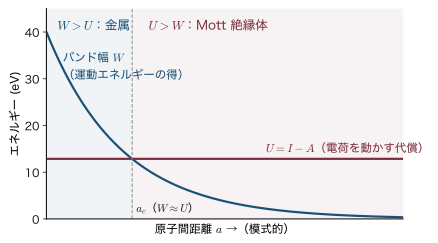
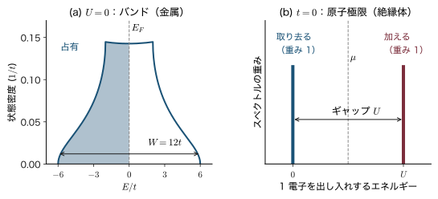
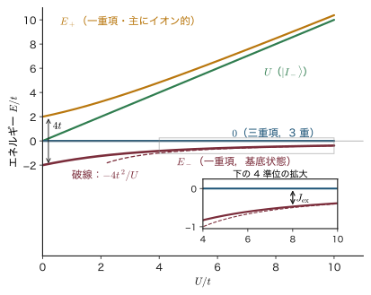
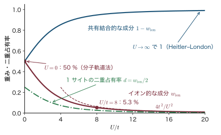
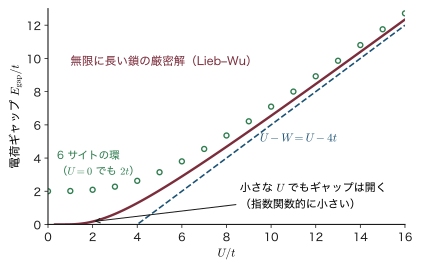
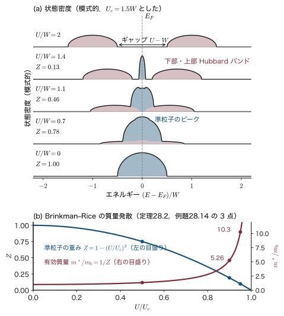
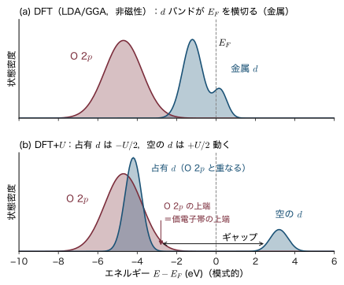

第28章電子間相互作用 — バンド理論の予言が外れるとき：Hubbard 模型と Mott 絶縁体
第16章では，結晶の電子を「平均的なポテンシャルの中を独立に動く 1 個 1 個の電子」として扱い，バンドを下から詰めていくだけで金属と絶縁体を見分ける規則にたどり着いた．単位胞あたりの価電子数が奇数なら必ず金属，バンドが途中まで詰まっていれば金属という規則である．Na も Cu も Al もこの規則どおりに金属であり，Si もダイヤモンドも規則どおりに絶縁体である．ところが，鉄族の遷移金属の一酸化物 MnO，FeO，CoO，NiO，CuO を並べると，この規則がほとんど当たらない．どれも $d$ バンドが途中までしか詰まらないので，バンド理論は「金属」と答える．実際には，NiO は約 $4\,\mathrm{eV}$ のギャップをもつ緑色の透明な絶縁体である．
外れる原因は，バンド理論が電子どうしの Coulomb 斥力を「平均」としてしか入れていないことにある．狭い $d$ 軌道に電子が 2 個乗ると，数 eV の余分な斥力を払わなければならない．この代償が，電子が結晶中を動き回って得をする運動エネルギー（バンド幅 $W$）より大きいと，電子は各原子に 1 個ずつ留まって動けなくなる．これが Mott 絶縁体（Mott insulator）である．この章では，実験事実（一酸化物の系列）→ Mott の考え → Hubbard 模型 → 2 サイトで厳密に解く → 格子に戻って Mott 絶縁体の順に進む．中心は，2 個の原子に 2 個の電子が乗った最小の模型を，$4\times4$ の行列の対角化として一行も省かずに解く 28.5 節である．そこから，Mott 絶縁体が反強磁性になる理由（交換相互作用 $J_{\rm ex}=4t^2/U$）まで一続きに導かれる．
この章は，第27章で導入した「準粒子」の考えが，相互作用が強いと成り立たなくなることがある，という例でもある．弱い相互作用では電子は少し重くなった準粒子として振る舞うが（第15章 15.9 節の Fermi 液体），相互作用が強まると準粒子の重みが減り，ついには電子を出し入れする励起が上下 2 つの Hubbard バンドに分かれてしまう．後半では，O 2$p$ 軌道まで入れた電荷移動型の分類（Zaanen–Sawatzky–Allen），第一原理計算での扱い（DFT+$U$ など），そして電子相関が生む他の現象（重い電子，Stoner 強磁性，銅酸化物の高温超伝導への入口）を見渡す．次の第29章では，相互作用の相手を格子（フォノン）に替えて，電子どうしの間に引力が生まれる仕組みを学ぶ．
- バンド理論の金属・絶縁体の規則（第16章）と，それが電子間の斥力を平均でしか入れていないこと
- ScO から CuO までの 3$d$ 遷移金属一酸化物の $d$ 電子の数え方，$t_{2g}$・$e_g$ への詰まり方，バンド理論の予言と実際
- 反強磁性秩序による単位胞の倍化（Slater の描像）では NiO などの絶縁性を説明できない理由
- Mott の思考実験（水素原子の格子）と，$U=I-A$ と バンド幅 $W$ の競争
- Hubbard 模型 $\Ham=-t\sum(c^\dagger_{i\sigma}c_{j\sigma}+\mathrm{h.c.})+U\sum n_{i\uparrow}n_{i\downarrow}$ の各項の意味と 2 つの極限
- 2 サイト Hubbard 模型の厳密解：基底を選んで $4\times4$ の行列を書き，一重項・三重項に分けて固有値 $E_\pm=\frac U2\pm\sqrt{\frac{U^2}4+4t^2}$ を導く
- 基底状態の共有結合的成分とイオン的成分，二重占有率，大きな $U$ での展開と反強磁性の交換相互作用 $J_{\rm ex}=4t^2/U$
- 下部・上部 Hubbard バンド，Mott ギャップ $\approx U-W$，Mott 転移と準粒子の重み $Z$，実在の Mott 転移の例
- Mott–Hubbard 型と電荷移動型の区別（Zaanen–Sawatzky–Allen の図）で，一酸化物の系列の「前半は金属，後半は絶縁体」を説明する
- LDA・GGA が NiO などで失敗する理由と，DFT+$U$・ハイブリッド汎関数・GW・DFT+DMFT の位置づけ
28.1 バンド理論が予言する金属
28.1.1 第16章の規則をふり返る
まず，バンド理論が金属と絶縁体をどう見分けたかを思い出そう（第16章 16.7 節）．$N$ 個の単位胞（primitive cell）からなる結晶では，1 本のバンドに $\kk$ の値が $N$ 通りあり，それぞれにスピン上向き・下向きの 2 通りがあるので，1 本のバンドには電子がちょうど $2N$ 個入る．単位胞あたりの価電子数を $n_v$ とすると，全電子数は $n_vN$ であり，これを下から詰めると $n_vN/2N=n_v/2$ 本のバンドが埋まる．
- $n_v$ が奇数なら $n_v/2$ は半整数で，最後のバンドはちょうど半分だけ詰まる．半分詰まったバンドでは，Fermi 準位 $E_F$ のすぐ上に空いた状態があるので，わずかな電場で電子の分布がずれて電流が流れる．したがって必ず金属である．
- $n_v$ が偶数なら，ちょうど整数本のバンドが埋まりうる．その上にギャップがあれば絶縁体（半導体）であり，バンドが重なれば金属である．
「奇数なら必ず金属」は，非磁性で，スピンが縮退したバンドを，もとの単位胞の周期のままで数えるかぎり，例外のない定理であった（第16章の定理16.2）．この章の主題は，この定理の前提——電子が互いに独立に動くこと——が崩れる場合である．
図28.1 で読み取ってほしいのは，(a) と (c) が「途中まで詰まったバンドの中に $E_F$ がある」という点でまったく同じ形をしていることである．バンド理論の言葉だけで考えるかぎり，NiO が Na と違う理由は見当たらない．
例題28.1 MnO・CoO・NiO の価電子数と偶奇
岩塩型の MnO，CoO，NiO の単位胞（primitive cell）には金属原子 1 個と酸素原子 1 個が入っている．価電子として，金属原子の 3$d$ と 4$s$ の電子，酸素の 2$s$ と 2$p$ の電子を数える．単位胞あたりの価電子数 $n_v$ とその偶奇を求め，第16章の規則が何を予言するかを答えよ．
解答．中性原子の電子配置は Mn：[Ar]$3d^54s^2$，Co：[Ar]$3d^74s^2$，Ni：[Ar]$3d^84s^2$，O：[He]$2s^22p^4$ である．価電子は
$$ \text{Mn}:\ 5+2=7,\qquad \text{Co}:\ 7+2=9,\qquad \text{Ni}:\ 8+2=10,\qquad \text{O}:\ 2+4=6 $$したがって単位胞あたりは
$$ \mathrm{MnO}:\ n_v=7+6=13,\qquad \mathrm{CoO}:\ n_v=9+6=15,\qquad \mathrm{NiO}:\ n_v=10+6=16 $$MnO と CoO は奇数なので，第16章の定理16.2 によれば必ず金属である．NiO は偶数なので規則だけからは決まらないが，図28.1 (c) のように $d$ バンドを詰めると $e_g$ バンドが半分詰まりになり，やはり金属が予言される．
∎ 実際には 3 つとも絶縁体である（MnO は約 $3.6$〜$4\,\mathrm{eV}$，CoO は約 $2.5\,\mathrm{eV}$，NiO は約 $4\,\mathrm{eV}$ のギャップ）．とくに MnO と CoO は，「奇数なら必ず金属」という定理そのものの反例になっている．定理の前提のどこかが崩れているはずである．
28.1.2 遷移金属酸化物でのバンドの詰まり方
3$d$ 遷移金属の一酸化物 MO（M = Sc, Ti, …, Cu）を，イオンの描像で数えておく．酸素は電気陰性度が大きいので，金属原子から電子を 2 個受け取って O$^{2-}$（$2s^22p^6$，閉殻）になる．金属は M$^{2+}$ になり，$4s$ の 2 個を失って $3d^n$ が残る．Sc（$3d^14s^2$）なら $d^1$，Ti なら $d^2$，…，Cu（$3d^{10}4s^1$）なら Cu$^{2+}$ は $d^9$ である．
バンドで言い直すと，酸素の 2$p$ バンドは満杯（O$^{2-}$ の 6 個）で，その上に金属の 3$d$ バンドが $n$ 個の電子で部分的に詰まる．$d$ バンドには 5 本の軌道 × 2 スピン ＝ 10 個の席がある．八面体の結晶場の中では（第10章 10.1 節），5 つの $d$ 軌道は 3 重に縮退した $t_{2g}$（$d_{xy},d_{yz},d_{zx}$，席は 6 個）と，それより高い 2 重に縮退した $e_g$（$d_{x^2-y^2},d_{3z^2-r^2}$，席は 4 個）に分かれる．岩塩型構造では金属イオンのまわりに 6 個の酸素が八面体の頂点に並ぶので，まさにこの状況である．
非磁性のバンド計算（上向きと下向きのスピンを同じに詰める計算）で，$d$ バンドがちょうど満杯になって絶縁体になりうるのは，詰まるバンドの境目がちょうど席の数の切れ目に来るときだけである．切れ目は $t_{2g}$ が満杯になる 6 個と，$d$ 全体が満杯になる 10 個の 2 か所しかない．$n=1,\dots,9$ のうち切れ目に当たるのは $n=6$（$t_{2g}^6$．$t_{2g}$ バンドが満杯で $e_g$ バンドが空）だけで，残りの 8 つでは $t_{2g}$ か $e_g$ のバンドが途中まで詰まるので，必ず金属になる．その $n=6$ でも，実際の $t_{2g}$ と $e_g$ のバンドは幅をもって重なるので（$e_g$ と $t_{2g}$ の分裂 $10Dq$ は第10章の結晶場の分裂で，酸化物では $1\,\mathrm{eV}$ 程度．$d$ バンドの幅と同程度），FeO（$d^6$）も非磁性のバンド計算では金属になる．つまりScO から CuO までのすべてについて，バンド理論は金属を予言する．
28.1.3 バンド理論は電子間の斥力をどう扱っているか
では，バンド理論は電子どうしの Coulomb 斥力を無視しているのか．そうではない．第一原理のバンド計算（密度汎関数理論）は，他のすべての電子が作る平均的な静電ポテンシャル（Hartree ポテンシャル）と，交換・相関の効果を密度だけで決まる平均的なポテンシャルとして取り込み，その中を 1 個の電子が独立に動く問題を解いている．これを 1 電子近似（one-electron approximation）または平均場近似という．
平均場で失われるのは，電子どうしが互いを避けて動くという相関（correlation）である．たとえば Ni の $d$ 軌道に電子が平均 8 個入っているとき，平均場は「どの瞬間にも 8 個」という見方をする．実際には，電子がある Ni から隣の Ni へ移ると，一方は $d^7$，他方は $d^9$ になる瞬間がある．$d^9$ の側では電子どうしが狭い $d$ 軌道の中で押し合い，平均値よりはるかに大きな斥力がかかる．この「電荷のゆらぎの代償」は，平均だけを見ていては決して現れない．次の節で見る系列は，この代償が主役になる物質群である．
補足：「強相関」という言葉
電子どうしの相関が物性を左右する系を 強相関電子系（strongly correlated electron systems）と呼ぶ．代表は 3$d$ 遷移金属の酸化物，4$f$・5$f$ 電子をもつ希土類・アクチノイドの化合物（重い電子系），分子性の有機導体である．共通するのは，電子が狭い軌道（$d$，$f$，分子軌道）に入り，隣への飛び移りが小さいことである．第18章 18.4 節の強束縛近似の言葉で言えば，飛び移り積分が小さくバンドが狭い．狭いバンドの電子ほど，運動エネルギーの得が小さく，相互作用の効果が相対的に大きくなる．
28.2 遷移金属一酸化物 — ScO から CuO まで
28.2.1 系列を並べる
3$d$ 遷移金属の一酸化物を Sc から Cu まで並べると，バンド理論の予言と実際の違いが一目でわかる．表28.1 と図28.2 にまとめた．$d$ 電子の数は 28.1.2 項のとおり，M$^{2+}$ の $d^n$（$n=1,\dots,9$）である．$t_{2g}$・$e_g$ への詰まり方は，Hund の規則（第20章 20.4 節）にしたがってスピンをそろえて詰める 高スピン状態（high-spin state）で書いた．MnO から NiO の M$^{2+}$ はいずれも高スピン状態にあることが知られている．
| 物質 | $d^n$ | 高スピンの詰まり方 | $n_v$（偶奇） | バンド理論 | 実際 | ギャップ | 磁気秩序（$T_N$） | 結晶構造 |
|---|---|---|---|---|---|---|---|---|
| ScO | $d^1$ | $t_{2g}^{1}$ | 9（奇） | 金属 | 安定なバルク相なし．バンド理論の勘定の例として載せる | （岩塩型を仮定） | ||
| TiO | $d^2$ | $t_{2g}^{2}$ | 10（偶） | 金属 | 金属（約 1 K 以下で超伝導） | なし | なし | 空孔の多い岩塩型 |
| VO | $d^3$ | $t_{2g}^{3}$ | 11（奇） | 金属 | 金属的（組成で半導体的にも） | なし | なし | 空孔の多い岩塩型 |
| CrO | $d^4$ | $t_{2g}^{3}e_g^{1}$ | 12（偶） | 金属 | 安定なバルク相なし（薄膜での報告がある）．バンド理論の勘定の例として載せる | （岩塩型を仮定） | ||
| MnO | $d^5$ | $t_{2g}^{3}e_g^{2}$ | 13（奇） | 金属 | 絶縁体 | 約 3.6〜4 eV | AF，116 K（文献により 116〜118 K） | 岩塩型 |
| FeO | $d^6$ | $t_{2g}^{4}e_g^{2}$ | 14（偶） | 金属 | 絶縁体 | 約 2.4 eV（試料と測定法による幅が大きい） | AF，約 198 K | 岩塩型（不定比 Fe$_{1-x}$O） |
| CoO | $d^7$ | $t_{2g}^{5}e_g^{2}$ | 15（奇） | 金属 | 絶縁体 | 約 2.5 eV | AF，約 290 K | 岩塩型 |
| NiO | $d^8$ | $t_{2g}^{6}e_g^{2}$ | 16（偶） | 金属 | 絶縁体 | 約 4〜4.3 eV | AF，約 525 K | 岩塩型 |
| CuO | $d^9$ | （平面 4 配位．$x^2-y^2$ 型の軌道に穴 1 個） | 17（奇）．ただし単斜晶の基本単位胞（CuO 2 単位）では 34（偶） | 金属 | 絶縁体 | 約 1.4 eV（1.2〜1.7） | AF，約 230 K | 単斜晶（テノライト） |
表の読み方を補っておく．
- ScO と CrO：Sc は 3 価（Sc$_2$O$_3$），Cr は 3 価（Cr$_2$O$_3$）を強く好むので，2 価の一酸化物は安定なバルクの結晶としては知られていない（CrO は基板の上の数原子層の薄膜で岩塩型が報告されている程度）．表には，「もし岩塩型の一酸化物があったらバンド理論はどう数えるか」という勘定の例として載せた．
- TiO と VO：岩塩型だが，金属と酸素の両方の席に 15% 程度の空孔を含む．金属的な伝導を示し，TiO は低温（約 1 K 以下）で超伝導になる．前半の 2 つが金属であることは，バンド理論の予言と合っている．
- MnO から NiO：岩塩型の絶縁体で，すべて反強磁性である．Néel 温度 $T_N$ 以下では，金属イオンのスピンが (111) 面の中でそろい，隣の (111) 面とは反対を向く（第 2 種の反強磁性．AF-II と呼ぶ．図28.3）．秩序に伴って格子がわずかに歪む（MnO・NiO・FeO は菱面体的，CoO は正方晶的）．FeO は Fe が数 % 欠けた不定比の化合物 Fe$_{1-x}$O（ウスタイト）としてしか得られない．
- CuO：岩塩型ではなく単斜晶（テノライト，tenorite）で，Cu$^{2+}$ のまわりに酸素が平面 4 配位で並ぶ．$d^9$ の穴 1 個は $x^2-y^2$ 型の軌道に入る．単斜晶の基本単位胞には CuO が 2 単位入るので価電子数は $2\times17=34$ で偶数になるが，各 Cu の $x^2-y^2$ 型の軌道が半分詰まりなので，非磁性のバンド計算はやはり金属を与える．単位胞あたりの電子数が偶数でも，バンドが重なったり途中で切れたりすれば金属になる（28.1.1 項の 2 つ目の場合）．CuO は「奇数なら必ず金属」の反例ではなく，「バンドが途中まで詰まるので金属」という予言が外れる例として数える．磁気秩序は約 230 K で現れる（約 213 K 以下で整合な反強磁性になる）．
- ギャップと $T_N$：ギャップは光吸収や光電子分光・逆光電子分光から，$T_N$ は帯磁率や中性子回折から決められる．ギャップは測定法と試料（とくに FeO）によって値に幅がある．表の値は「程度」を示すものと考えてほしい．MnO の $T_N$ は，第20章の表20.8 と同じ 116 K とした（文献により 116〜118 K）．
28.2.2 何が問題なのか — 前半は金属，後半は絶縁体
表28.1 の「バンド理論」の列はすべて「金属」である．実際は，前半の TiO・VO が金属，後半の MnO〜CuO が絶縁体である．しかも後半の絶縁体のギャップは 1.4〜4 eV と大きく，Si（1.11 eV）より大きいものが多い．NiO の単結晶は緑色で透明である．「わずかな補正で直る」という程度の外れ方ではない．
例題28.2 $d^n$ の詰め方と，スピン分極したバンドで数える
(1) FeO（$d^6$）と CoO（$d^7$）の Fe$^{2+}$・Co$^{2+}$ の $d$ 電子を，高スピン状態で $t_{2g}$・$e_g$ に詰めよ．各イオンのスピン $S$ を求めよ．(2) 反強磁性の秩序を取り入れて，各イオンの位置で上向きスピン（多数スピン）と下向きスピン（少数スピン）のバンドを別々に詰める（スピン分極したバンド計算の考え方）．多数スピンの $d$ バンドには最大 5 個（$t_{2g}$ に 3，$e_g$ に 2）入る．FeO・CoO・MnO・NiO の少数スピンのバンドがどう詰まるかを答え，この描像でギャップが開きうるのはどれかを判定せよ．
解答．(1) 高スピン状態では，まず 5 つの軌道にスピンをそろえて 1 個ずつ入れ（多数スピン 5 個），6 個目から逆向きのスピンを低い $t_{2g}$ に入れる．
$$ \mathrm{Fe^{2+}}\ (d^6):\ t_{2g}^{3\uparrow}e_g^{2\uparrow}\,t_{2g}^{1\downarrow},\qquad \mathrm{Co^{2+}}\ (d^7):\ t_{2g}^{3\uparrow}e_g^{2\uparrow}\,t_{2g}^{2\downarrow} $$スピンは不対電子の数の半分なので，Fe$^{2+}$ は上向き 5，下向き 1 で $S=\frac12(5-1)=2$，Co$^{2+}$ は $S=\frac12(5-2)=\frac32$．
(2) 多数スピンのバンドは，MnO〜NiO のどれも 5 個で満杯である．少数スピンのバンドの詰まり方は
- MnO（$d^5$）：少数スピン 0 個．$t_{2g}^\downarrow$ も $e_g^\downarrow$ も空．満杯の多数スピンのバンドと空の少数スピンのバンドの間にギャップが開きうる．
- FeO（$d^6$）：少数スピン 1 個が，3 つの $t_{2g}^\downarrow$ 軌道（6 個ではなく 3 個の席．スピンが決まっているので）に入る．$t_{2g}^\downarrow$ バンドは $1/3$ だけ詰まり，金属．
- CoO（$d^7$）：少数スピン 2 個が $t_{2g}^\downarrow$ の 3 席に入り，$2/3$ 詰まりで金属．
- NiO（$d^8$）：少数スピン 3 個で $t_{2g}^\downarrow$ がちょうど満杯，$e_g^\downarrow$ は空．$t_{2g}^\downarrow$ と $e_g^\downarrow$ の間（結晶場の分裂）にギャップが開きうる．
∎ スピン分極を入れても，FeO と CoO は部分的に詰まった $t_{2g}^\downarrow$ バンドが残るので金属のままである．MnO と NiO にはギャップが開きうるが，その大きさは交換分裂や結晶場の分裂（1 eV 程度）で決まり，実測の約 4 eV には届かない．これが次の 28.2.3 項で述べる Terakura らの計算結果の中身である．
28.2.3 歴史 — de Boer と Verwey，Mott と Peierls
この問題は古い．Bloch（ブロッホ）と Wilson（ウィルソン）のバンド理論が金属と絶縁体の区別を説明した直後の 1937 年に，de Boer（デ・ブーア）と Verwey（フェルウェイ）は，NiO などの遷移金属酸化物が $d$ バンドを部分的にしか満たさないのに絶縁体であることを指摘した．同じ会議で Mott（モット）と Peierls（パイエルス）は，その原因を電子どうしの Coulomb 斥力に求めた．電子が隣のイオンへ移ると，移った先で電子どうしが強く反発するので，それを避けるために電子はそれぞれのイオンに留まる——という考えである．この考えを Mott が 1949 年に定式化し（28.3 節），Hubbard（ハバード）・Gutzwiller（グッツヴィラー）・金森順次郎が 1963 年に最も簡単な模型にまとめた（28.4 節）．
28.2.4 反強磁性で単位胞が倍になるからか — Slater の描像の検討
MnO〜NiO はすべて反強磁性である．すると，次のような説明が思いつく．「反強磁性秩序では，スピンが上向きの原子と下向きの原子が交互に並ぶので，磁気的な単位胞はもとの 2 倍になる．単位胞が 2 倍になれば価電子数も 2 倍になって偶数になり，第16章の定理の前提（もとの単位胞の周期）も崩れる．Brillouin 域が半分になってバンドが折り返され，その境界にギャップが開く．」これは Slater（スレーター）が 1951 年に考えた機構で，この機構で絶縁体になったものを Slater 絶縁体（Slater insulator）と呼ぶ．
この説明には 2 つの反証がある．
- 計算による反証：反強磁性の秩序を取り入れたスピン分極したバンド計算（局所スピン密度近似 LSDA）を，寺倉清之らが 1984 年に MnO・FeO・CoO・NiO について系統的に行った．MnO と NiO には小さなギャップ（実測の数分の 1 程度）が開いたが，FeO と CoO は金属のままであった．理由は例題28.2 で見たとおりである．
- 実験による反証：MnO〜NiO は $T_N$ より上の常磁性相でも絶縁体のままである．NiO は $T_N\approx525\,\mathrm{K}$ を越えても，ギャップはほとんど変わらない．Slater の機構なら，磁気秩序が消える $T_N$ でギャップも閉じるはずである．
したがって，磁気秩序はギャップの原因ではない．原因は，スピンが秩序を作るか作らないかに関係なく働く，もっと大きなエネルギー——電子が隣へ移るときの Coulomb 斥力の代償——である．次の節でその考えを見る．
例題28.3 常磁性相の絶縁性は何を教えるか
NiO の光学ギャップ（約 4 eV）が $T_N\approx525\,\mathrm{K}$ の前後でほとんど変わらないことから，ギャップを開いているエネルギーの大きさについて何が言えるか．熱エネルギー $k_BT_N$ と比べて論ぜよ．
解答．$T_N$ での熱エネルギーは
$$ k_BT_N=8.617\times10^{-5}\,\mathrm{eV/K}\times525\,\mathrm{K}=0.0452\,\mathrm{eV}\approx45\,\mathrm{meV} $$である．磁気秩序を壊すのに必要なエネルギー（スピンどうしの交換相互作用の大きさ）は，この程度（数十 meV）である．一方，ギャップは約 4 eV で
$$ \frac{4\,\mathrm{eV}}{0.045\,\mathrm{eV}}\approx90 $$倍も大きい．もしギャップが磁気秩序から生じているなら，ギャップの大きさは磁気秩序を作るエネルギーの程度になるはずだが，2 桁も違う．
∎ ギャップを開いているのは磁気（スピンの向き）ではなく，電荷を動かすときのエネルギーであり，それはスピンの秩序のエネルギーより 2 桁大きい．この「電荷のエネルギー（eV）とスピンのエネルギー（数十 meV）の分離」は，28.5 節の 2 サイト模型で $U$ と $J_{\rm ex}=4t^2/U$ の違いとして導かれる．
動かして確かめる：ScO から CuO まで $d$ 電子を 1 個ずつ増やして，予言と実際を比べる
上の帯の物質名を押すか，$d$ 電子の数を 1 個ずつ増減させると，図28.2 と同じ $t_{2g}$・$e_g$ の箱に矢印が詰まり，単位胞あたりの価電子数 $n_v$ と偶奇，バンド理論の勘定（O 2$p$ 満杯＋$d$ バンド 10 席に $n$ 個＝金属），実際の物性（表28.1 と同じギャップ・$T_N$・結晶構造）が並ぶ．MnO〜NiO では，例題28.2 のスピン分極した勘定と，例題28.3 のギャップと $k_BT_N$ の比も表示される．下の Zaanen–Sawatzky–Allen の図（模式的．28.7 節の図28.18 と同じ向き）で，系列が左上から右下へ動くことも見ておくとよい．ScO と CrO は安定なバルク相が知られていないので，図には置かれていない．
28.3 Mott の考え — 電子が互いを避けて局在する
28.3.1 水素原子の格子という思考実験
Mott は，遷移金属酸化物の複雑さを取り去った次の思考実験で問題の核心を示した．水素原子を単純立方格子に並べ，格子定数 $a$ を大きくしていく．各原子は 1s 電子を 1 個もつので，単位胞あたりの価電子数は $n_v=1$（奇数）である．
- バンド理論の答え：1s 軌道からできる 1 本のバンドが半分詰まる．$a$ をどれだけ大きくしても，バンド幅が狭くなるだけで「半分詰まり」は変わらない．したがってバンド理論は，どんな $a$ でも金属と答え続ける．
- 常識の答え：$a$ が 1 m なら，これは互いに遠く離れた中性の水素原子の集まりであり，電流が流れるはずがない．十分大きな $a$ では絶縁体である．
どちらが正しいかは明らかである．では，バンド理論は何を見落としたのか．
28.3.2 電荷を運ぶには $U$ が要る
図28.4 (b) の状態から電流を流すことを考える．電流とは電荷の流れなので，どこかの電子が隣の原子へ移らなければならない．電子が移った後の状態は (c) のように，電子のなくなった H$^+$ と，電子を 2 個もつ H$^-$ の組である．このエネルギーを勘定しよう．
導出：電子を隣へ移すエネルギー $U=I-A$
ステップ1：中性原子 2 個 H + H から始める．左の原子から電子を 1 個取り去る．これに要るエネルギーは水素原子のイオン化エネルギー（ionization energy）$I$ である：
$$ \mathrm{H}\ \to\ \mathrm{H}^++\mathrm{e}^-\qquad \Delta E_1=+I $$ステップ2：取り去った電子を右の中性原子に付ける．中性原子が電子を受け取ってエネルギーが下がる分が電子親和力（electron affinity）$A$ である：
$$ \mathrm{H}+\mathrm{e}^-\ \to\ \mathrm{H}^-\qquad \Delta E_2=-A $$ステップ3：2 つを足すと，H + H → H$^+$ + H$^-$ のエネルギー変化は
$$ \Delta E=\Delta E_1+\Delta E_2=I-A $$（原子が十分離れていれば，H$^+$ と H$^-$ の間の Coulomb 引力は無視できる．）これを $U$ と書く：
∎ $U$ は「同じ原子に電子が 2 個乗ったとき，1 個ずつ別々の原子にいるときより余分にかかる Coulomb 斥力のエネルギー」と読める．実際，$I$ は電子 1 個の原子から電子を取るエネルギー，$A$ は電子 2 個目を加えたときの得であり，その差は 2 個目の電子が 1 個目の電子から受ける斥力の分だけ生じている．
例題28.4 水素の $U$
水素原子のイオン化エネルギーは $I=13.60\,\mathrm{eV}$，電子親和力は $A=0.75\,\mathrm{eV}$ である．$U$ を求め，室温の熱エネルギー $k_BT=25.85\,\mathrm{meV}$ と比べよ．
解答．式 \eqref{eq:28-UIA} から
$$ U=I-A=13.60\,\mathrm{eV}-0.75\,\mathrm{eV}=12.85\,\mathrm{eV} $$熱エネルギーとの比は
$$ \frac{U}{k_BT}=\frac{12.85\,\mathrm{eV}}{0.02585\,\mathrm{eV}}=497 $$∎ 約 500 倍である．Boltzmann 因子で言えば，熱で H$^+$H$^-$ の組ができる確率は $\ee^{-497}$ 程度で，事実上ゼロである．電子は互いに離れた原子に 1 個ずつ留まり，電荷を運ぶ担い手は存在しない．H$^-$ の電子親和力が $0.75\,\mathrm{eV}$ と小さいのは，2 個目の電子が 1 個目から強い斥力を受け，弱くしか束縛されないからである．
28.3.3 $U$ とバンド幅 $W$ の競争
原子を近づけると，1s 軌道が重なって電子は隣へ飛び移れるようになる．飛び移りの強さを表すのが強束縛近似の飛び移り積分（hopping integral）$t$ であり（第18章 18.4 節．第18章では $\gamma$ と書いた），1s バンドの幅は $W=2zt$（$z$ は最近接原子の数）になる．軌道の重なりは原子間距離とともに指数関数的に小さくなるので，$W$ も $a$ とともに急速に小さくなる．一方，$U$ は 1 つの原子の中の性質なので，$a$ にほとんどよらない．
電子が隣へ飛び移ることで得られるエネルギーは，バンドの底のほうの状態に電子が入ることによる運動エネルギーの得で，大きさは $W$ の程度である．電子が飛び移ると，ある確率で同じ原子に電子が 2 個乗る瞬間ができ，そのたびに $U$ を払う．$W$ が $U$ より大きければ，$U$ を払ってでも飛び移るほうが得で，金属になる．$U$ が $W$ より大きければ，飛び移りをやめて各原子に留まるほうが得で，絶縁体になる．この絶縁体を Mott 絶縁体（Mott insulator）という．図28.5 に，この競争を模式的に描いた．

導出：「$W$ と $U$ のどちらが大きいか」の最も粗い見積もり
半分詰まりのバンドを，幅 $W$ の平らな状態密度で近似する．1 サイト・1 スピンあたりの状態密度は，幅 $W$ の中に 1 個の状態があるので $N=1/W$ である．バンドの中心をエネルギーの原点にとる．
ステップ1：独立電子（金属）の運動エネルギー．半分詰まりでは，各スピンの電子は $-W/2$ から $0$ まで詰まる．1 サイト・1 スピンあたりのエネルギーは
$$ \int_{-W/2}^{0}E\,\frac{1}{W}\,\dd E=\frac{1}{W}\left[\frac{E^2}{2}\right]_{-W/2}^{0}=\frac{1}{W}\left(0-\frac{W^2}{8}\right)=-\frac{W}{8} $$スピンは 2 つあるので，1 サイトあたり $2\times(-W/8)=-W/4$．
ステップ2：独立電子のときの斥力の代償．電子が互いを避けずに独立に動くと，あるサイトに上向きの電子がいる確率は $\langle n_\uparrow\rangle=\frac12$，下向きがいる確率も $\langle n_\downarrow\rangle=\frac12$ で，両者は独立だから，同じサイトに 2 個いる確率（二重占有率）は $\frac12\times\frac12=\frac14$ である．そのたびに $U$ を払うので，1 サイトあたり $U/4$．
ステップ3：比べる．金属（独立電子）の 1 サイトあたりのエネルギーは
$$ E_{\rm metal}=-\frac{W}{4}+\frac{U}{4}=\frac{U-W}{4} $$各原子に 1 個ずつ留まる状態では，運動エネルギーの得も二重占有の代償もないので $E_{\rm loc}=0$（スピンどうしの小さな相互作用は 28.5 節で扱う）．$E_{\rm metal}\lt E_{\rm loc}$ となるのは
$$ \frac{U-W}{4}\lt0\quad\Longleftrightarrow\quad U\lt W $$∎ 金属と絶縁体の境目は $U\approx W$ にある．この見積もりは「二重占有を全く避けない状態」と「完全に避ける状態」の 2 つしか比べていないので，境目の値は粗い．実際には電子は二重占有を部分的に避けながら動けるので，金属はもう少し大きな $U$ まで残る（28.6 節の Brinkman–Rice の議論）．
臨界値 $U_c$ の係数（$W$ の何倍か）は，模型（状態密度の形，格子）と近似の方法によって変わる．この章では，平らな状態密度の Gutzwiller 近似で $U_c=2W$（演習28.7），半円形の状態密度の Gutzwiller 近似で約 $1.7W$，動的平均場理論で約 $1.5W$ という値が出てくる．どれも「目安は $U\sim W$」という同じ結論の言い換えであり，係数の違いにこだわる必要はない（28.6.2 項の「注意」）．
例題28.5 Ni$^{2+}$ の原子の $U$ と固体での $U$
Ni の第 2 イオン化エネルギー（Ni$^+$ → Ni$^{2+}$）は $18.17\,\mathrm{eV}$，第 3 イオン化エネルギー（Ni$^{2+}$ → Ni$^{3+}$）は $35.19\,\mathrm{eV}$ である．NiO の中で電子を 1 つの Ni$^{2+}$（$d^8$）から別の Ni$^{2+}$ へ移す反応 $d^8+d^8\to d^7+d^9$ のエネルギーを，孤立したイオンの値で見積もれ．NiO で実際に見積もられている $U\approx7$〜$8\,\mathrm{eV}$ と比べ，違いの原因を述べよ．
解答．反応 $2\,\mathrm{Ni^{2+}}\to\mathrm{Ni^{3+}}+\mathrm{Ni^{+}}$ を 2 段に分ける．一方の Ni$^{2+}$ から電子を取るのに第 3 イオン化エネルギー $I_3$ が要る：
$$ \mathrm{Ni^{2+}}\to\mathrm{Ni^{3+}}+\mathrm{e}^-\qquad \Delta E_1=+I_3=35.19\,\mathrm{eV} $$もう一方の Ni$^{2+}$ がその電子を受け取る過程は，第 2 イオン化の逆なので，$I_2$ だけエネルギーが下がる：
$$ \mathrm{Ni^{2+}}+\mathrm{e}^-\to\mathrm{Ni^{+}}\qquad \Delta E_2=-I_2=-18.17\,\mathrm{eV} $$合わせて
$$ U_{\rm atom}=I_3-I_2=35.19-18.17=17.02\,\mathrm{eV} $$∎ 孤立イオンの値は約 $17\,\mathrm{eV}$ で，固体での約 $7$〜$8\,\mathrm{eV}$ の 2 倍以上ある．固体の中では，Ni$^{3+}$ と Ni$^+$ ができると，まわりの O$^{2-}$ の電子雲や他のイオンが分極して余分な電荷を遮蔽（screening）し，エネルギーを大きく下げるからである．それでも，NiO の $d$ バンドの幅（数 eV 程度）と同じか大きい．$U$ は「原子の値」ではなく，固体の中で遮蔽された値として扱わなければならない．これは 28.8 節の第一原理計算で $U$ をどう決めるかという問題につながる．
補足：半導体の不純物帯の Mott 転移
水素原子の格子の思考実験は，実はドープした半導体で実現している．Si に P を入れると，P のまわりに電子が水素様の軌道（有効 Bohr 半径 $a_H\approx1.7$〜$2\,\mathrm{nm}$．第36章の表36.2 では $1.7\,\mathrm{nm}$）で束縛される（第17章 17.6 節）．P の濃度 $n$ を上げると，ドナーどうしの距離が縮まって「水素原子の格子」の $a$ を小さくしたのと同じことが起こり，ある濃度 $n_c$ で絶縁体から金属に変わる．この転移は第36章（36.6 節）で詳しく扱う（Mott の判定 $n_c^{1/3}a_H\simeq0.25$）．28.6 節でもう一度比べる．
28.4 Hubbard 模型
28.4.1 模型を書く
Mott の考えを，計算できる最小の形にしたのが Hubbard 模型（Hubbard model）である．1963 年に Hubbard が遷移金属の $d$ 電子の相関を扱うために，Gutzwiller が金属の強磁性を扱うために，金森順次郎が強磁性と電子相関を扱うために，ほぼ同時に独立に提案した．格子の各サイト（原子）$i$ に軌道が 1 つだけあるとし，そこに入る電子のスピンを $\sigma=\uparrow,\downarrow$ とする．
定義：Hubbard 模型
- $c^\dagger_{i\sigma}$（「シー・ダガー」）：サイト $i$ にスピン $\sigma$ の電子を 1 個作る演算子（生成演算子）．$c_{i\sigma}$：サイト $i$ からスピン $\sigma$ の電子を 1 個消す演算子（消滅演算子）．
- $n_{i\sigma}=c^\dagger_{i\sigma}c_{i\sigma}$：サイト $i$ のスピン $\sigma$ の電子の数（0 か 1）を数える数演算子．
- $\sum_{\langle ij\rangle}$：最近接のサイトの組 $(i,j)$ について，各組を 1 回ずつ足す．
- $t\gt0$：飛び移り積分（hopping integral）．$U\gt0$：同じサイトに電子が 2 個乗ったときの斥力（on-site Coulomb repulsion）．
第 1 項の括弧の中の 2 つは互いにエルミート共役なので，$c^\dagger_{i\sigma}c_{j\sigma}+\mathrm{h.c.}$（h.c. は Hermitian conjugate）とも書く．
生成・消滅演算子の読み方は第27章 27.4 節で導入した．ここで必要なのは，演算子の積を右から順に読むことだけである．
- $c^\dagger_{i\sigma}c_{j\sigma}$：まず $c_{j\sigma}$ でサイト $j$ のスピン $\sigma$ の電子を消し，次に $c^\dagger_{i\sigma}$ でサイト $i$ に同じスピンの電子を作る．つまり電子が $j$ から $i$ へ飛び移る過程を表す．係数 $-t$ が付いているのは，飛び移りによってエネルギーが下がる（軌道の重なりで電子が得をする）ことを表す．飛び移りでスピンは変わらない．
- $Un_{i\uparrow}n_{i\downarrow}$：$n_{i\uparrow}n_{i\downarrow}$ は，サイト $i$ に上向きと下向きの電子が両方いるときだけ $1\times1=1$，それ以外は 0 である．したがってこの項は二重占有されたサイトの数だけ $U$ を足す．同じスピンの電子は Pauli の原理で同じ軌道に 2 個入れないので，二重占有は必ず $\uparrow\downarrow$ の組である．
Coulomb 斥力のうち，同じサイトの中の部分 $U$ だけを残し，隣のサイトとの斥力や長距離の部分は捨てている．長距離の部分は他の電子によって遮蔽されて弱まる（第21章 21.3 節）が，同じ原子の中の斥力は遮蔽しきれずに残る，という考えである．
記号の約束：本章の $t$，$W$，$E$，$J_{\rm ex}$
- $t$ は飛び移り積分（エネルギー）である．時間は本章ではほとんど使わないが，使うときは「時刻」と言葉で断る．第18章の強束縛近似では同じ量を $\gamma$ と書いた．
- $W$ はバンド幅（バンドの底から頂上までのエネルギー差）．第36章の 36.6.4 項では同じ量を $B$ と書いている．
- 第V部では 1 電子エネルギーを $E(\kk)$ と書く（第15〜18章の $\epsilon_\kk$ と同じもの）．
- 交換相互作用は本章では $\Ham_{\rm eff}=J_{\rm ex}\,\bm S_1\cdot\bm S_2$（$J_{\rm ex}\gt0$ が反強磁性）の約束で書く．第20章は同じ記号 $J_{\rm ex}$ を別の約束 $-2J_{\rm ex}\bm S_1\cdot\bm S_2$ で使っているので，28.5.5 項の箱で対応をつける．
- 電荷移動エネルギーは必ず添字を付けて $\Delta_{\rm CT}$ と書く（第37章の超伝導ギャップ $\Delta$ とは別）．準粒子の重み $Z$ は第27章 27.2 節のくりこみ因子と同じものである．
28.4.2 1 つのサイトの 4 つの状態
Hubbard 模型の最も小さな部品は，1 つのサイトである．1 つの軌道には，電子が 0 個，上向き 1 個，下向き 1 個，上下 2 個の 4 つの状態しかない（図28.6）．$t=0$ のとき，それぞれのエネルギーは $Un_\uparrow n_\downarrow$ で決まり，$0,\,0,\,0,\,U$ である．
例題28.6 1 サイトの化学ポテンシャルと半充満
（この例題は統計力学の大正準分布——熱だけでなく粒子もやりとりする浴に接した系の分布——を使う．状態の重みが $\ee^{-\beta(E-\mu N)}$ になることだけを使うので，初めての読者は結論の「$\mu=U/2$ はギャップの中央」だけを読んで先へ進んでもよい．Fermi 分布 $f(E)$ も同じ重みから導かれる．）
1 つのサイトが温度 $T$ の熱浴と粒子浴に接している（$t=0$）．図28.6 の 4 つの状態の重み $\ee^{-\beta(E-\mu N)}$（$\beta=1/k_BT$）から，平均の電子数 $\langle N\rangle$ を求めよ．$\langle N\rangle=1$（半充満）となる $\mu$ を求め，その意味を述べよ．
解答．4 つの状態の重みは $1,\ \ee^{\beta\mu},\ \ee^{\beta\mu},\ \ee^{-\beta(U-2\mu)}$ なので，分配関数は
$$ \Xi=1+2\ee^{\beta\mu}+\ee^{-\beta(U-2\mu)} $$平均の電子数は，各状態の電子数に重みを掛けて足し，$\Xi$ で割る：
$$ \langle N\rangle=\frac{0\cdot1+1\cdot2\ee^{\beta\mu}+2\cdot\ee^{-\beta(U-2\mu)}}{1+2\ee^{\beta\mu}+\ee^{-\beta(U-2\mu)}} $$$\langle N\rangle=1$ と置いて分母を払うと
$$ 2\ee^{\beta\mu}+2\ee^{-\beta(U-2\mu)}=1+2\ee^{\beta\mu}+\ee^{-\beta(U-2\mu)} $$両辺から $2\ee^{\beta\mu}$ を引き，$\ee^{-\beta(U-2\mu)}$ を移項すると
$$ \ee^{-\beta(U-2\mu)}=1\quad\Longleftrightarrow\quad U-2\mu=0\quad\Longleftrightarrow\quad\mu=\frac{U}{2} $$∎ 温度によらず，$\mu=U/2$ で半充満になる．空の状態（$E-\mu N=0$）と二重占有の状態（$U-2\mu=0$）が同じ重みになり，電子を 1 個取る（$1\to0$）エネルギー $0-(-\mu)=U/2$ と 1 個加える（$1\to2$）エネルギー $(U-2\mu)-(-\mu)=U/2$ が等しくなる位置である．$\mu$ は電子を取るエネルギーと加えるエネルギーのちょうど真ん中，すなわち幅 $U$ のギャップの中央にある（図28.7 (b)）．
28.4.3 2 つの極限 — $U=0$ と $t=0$
Hubbard 模型は，2 つの極限ではすぐに解ける．
(1) $U=0$：バンドの極限．相互作用がなければ，Hubbard 模型は強束縛近似そのものである．単純立方格子（格子定数 $a$，最近接 $z=6$）では
となる（第18章 18.4.3 項の式で $\alpha=0$，$\gamma=t$ と置いたもの）．$\kk$ が $\Gamma$ 点で最小値 $-6t$，$R$ 点で最大値 $+6t$ をとるので，幅は $12t$ である．第18章では Bloch 和から導いたが，ここでは生成・消滅演算子の言葉で 1 次元の場合を確かめておく．
導出：1 次元の鎖で $U=0$ の Hubbard 模型を対角化する
$N$ 個のサイトが間隔 $a$ で並ぶ鎖（周期境界条件）を考え，スピン $\sigma$ を 1 つ固定する（スピンは飛び移りで変わらないので，スピンごとに別々に解ける）．飛び移りの項は
$$ \Ham_t=-t\sum_{j=1}^{N}\left(c^\dagger_{j}c_{j+1}+c^\dagger_{j+1}c_{j}\right) $$ステップ1：波数の演算子を導入する．Bloch 波に電子を 1 個作る演算子を
$$ c^\dagger_{k}=\frac{1}{\sqrt N}\sum_{j=1}^{N}\ee^{ikja}c^\dagger_{j},\qquad k=\frac{2\pi m}{Na}\ (m=0,1,\dots,N-1) $$と定義する（第16章の Bloch 和と同じ形）．周期境界条件は $c_{N+1}=c_1$（サイト $N$ の隣がサイト 1）とすることで，$\ee^{ik(N+1)a}=\ee^{ika}$ すなわち $\ee^{ikNa}=1$ が要るので，$k$ は上のように $2\pi/Na$ の整数倍に限られる．逆に解くと $c^\dagger_j=\frac{1}{\sqrt N}\sum_k\ee^{-ikja}c^\dagger_k$，そのエルミート共役は $c_j=\frac{1}{\sqrt N}\sum_k\ee^{ikja}c_k$ である．逆に解けることは，$\sum_{j=1}^{N}\ee^{i(k-k')ja}=N\delta_{kk'}$（$k\ne k'$ なら等比級数の和が 0）と，同じ形の $\sum_k\ee^{ik(j'-j)a}=N\delta_{jj'}$ から確かめられる．実際，右辺に定義を代入すると
$$ \frac{1}{\sqrt N}\sum_k\ee^{-ikja}c^\dagger_k=\frac1N\sum_{j'}\Big[\sum_k\ee^{ik(j'-j)a}\Big]c^\dagger_{j'}=\frac1N\sum_{j'}N\delta_{jj'}\,c^\dagger_{j'}=c^\dagger_j $$となる．
ステップ2：代入する．第 1 項は
$$ \sum_{j}c^\dagger_jc_{j+1}=\sum_j\frac{1}{N}\sum_{k,k'}\ee^{-ikja}\ee^{ik'(j+1)a}c^\dagger_kc_{k'}=\sum_{k,k'}\ee^{ik'a}\left[\frac1N\sum_j\ee^{i(k'-k)ja}\right]c^\dagger_kc_{k'} $$角括弧は $\delta_{kk'}$ なので，$k'=k$ だけが残り
$$ \sum_{j}c^\dagger_jc_{j+1}=\sum_k\ee^{ika}c^\dagger_kc_k $$第 2 項は第 1 項のエルミート共役なので $\sum_k\ee^{-ika}c^\dagger_kc_k$．
ステップ3：まとめる．
$$ \Ham_t=-t\sum_k\left(\ee^{ika}+\ee^{-ika}\right)c^\dagger_kc_k=\sum_k\left(-2t\cos ka\right)n_k $$ここで $n_k=c^\dagger_kc_k$ は，波数 $k$ の Bloch 状態（スピン $\sigma$）にいる電子の数（0 か 1）を数える数演算子である（$n_{i\sigma}$ のサイトを波数に替えたもの）．
∎ 波数 $k$ の状態のエネルギーは $E(k)=-2t\cos ka$ で，幅は $W=4t=2zt$（$z=2$）．Hamiltonian が $n_k$ の和になったので，状態は $k$ ごとに独立に詰めればよい．これがバンド理論の「1 電子状態を下から詰める」操作である．3 次元の単純立方格子でも，3 方向について同じ計算をすれば式 \eqref{eq:28-tb} が出る．
(2) $t=0$：原子の極限．飛び移りがなければ，各サイトは図28.6 の 4 つの状態のどれかに独立にいる．半充満（1 サイトに平均 1 個）の基底状態は，すべてのサイトに電子がちょうど 1 個ずついる状態である．二重占有を作ると $U$ だけ高くなるからである．各サイトのスピンは上向きでも下向きでもエネルギーは同じなので，$N$ サイトの基底状態は $2^N$ 重に縮退している．電子を 1 個取り去るのに要るエネルギーと加えるのに要るエネルギーの差は $U$ であり，電荷の励起に $U$ のギャップがある絶縁体になる．図28.7 に 2 つの極限を並べた．

2 つの極限は正反対の答え（金属と絶縁体）を与える．その間で何が起こるかは，2 つのエネルギー $W$（または $t$）と $U$ の比で決まる．模型に含まれる量は $t$，$U$ と，1 サイトあたりの電子数（充満率，filling）$n$ だけなので，Hubbard 模型の性質は $U/W$（あるいは $U/t$）と $n$ の 2 つだけで決まる．エネルギーの単位を $t$ にとればよいからである．
例題28.7 強束縛のバンド幅
(1) 単純立方格子で $t=0.4\,\mathrm{eV}$ のとき，バンド幅 $W$ を求めよ．(2) 1 次元の鎖で $t=1\,\mathrm{eV}$ のとき $W$ を求めよ．(3) (1) で $U=8\,\mathrm{eV}$ とすると $U/W$ はいくらか．28.3 節の粗い判定ではどちらの側か．
解答．(1) 最近接の数は $z=6$ なので，式 \eqref{eq:28-tb} から
$$ W=2zt=2\times6\times0.4\,\mathrm{eV}=4.8\,\mathrm{eV} $$(2) 1 次元では $z=2$ なので $W=2\times2\times1\,\mathrm{eV}=4\,\mathrm{eV}$（導出の $E(k)=-2t\cos ka$ の幅 $4t$ と一致）．
(3) $U/W=8/4.8=1.67$．
∎ $U\gt W$ なので，28.3 節の粗い判定では Mott 絶縁体の側にある．同じ $t$ でも，最近接の数 $z$ が多いほど $W$ が大きくなって金属になりやすい．3$d$ 遷移金属酸化物の $d$ バンドの幅は 1〜3 eV 程度，$U$ は数 eV なので，$U/W$ は 1 前後かそれ以上で，ちょうど金属と絶縁体の境目付近にある．これが，遷移金属酸化物で金属・絶縁体転移が多く見つかる理由である．
28.5 2 サイト Hubbard 模型を厳密に解く
この節がこの章の中心である．原子（サイト）が 2 つ，電子が 2 個の Hubbard 模型を，近似なしに解く．水素分子 H$_2$ を最も簡単にした模型であり，結晶の Mott 絶縁体の性質——電荷の励起は $U$ 程度と高く，スピンの励起は $4t^2/U$ 程度と安い——がすべてこの小さな模型に現れる．計算は $4\times4$ の行列の対角化だけである．姉妹編『量子力学』の第59章 59.5 節にも同じ模型の解があるが，ここでは記号の約束から最後の展開まで，すべてをこの場で導く．
28.5.1 模型と状態の数え方
サイト 1 と 2 に軌道が 1 つずつあり，その間の飛び移り積分を $t$ とする．式 \eqref{eq:28-hubbard} で組 $\langle ij\rangle$ は $(1,2)$ の 1 つだけなので
電子が入れる席は $1\uparrow,1\downarrow,2\uparrow,2\downarrow$ の 4 つで，そこに電子 2 個を入れる入れ方は $\binom42=6$ 通りある．全スピンの $z$ 成分 $S_z$（上向きの数と下向きの数の差の半分）は飛び移りでも $U$ の項でも変わらないので，$S_z$ ごとに分けて解ける．
- $S_z=+1$：$c^\dagger_{1\uparrow}c^\dagger_{2\uparrow}\ket{0}$ の 1 つだけ．飛び移ろうとしても行き先に同じスピンの電子がいる（Pauli の原理で禁止）ので飛び移れず，二重占有もない．エネルギーは $0$．
- $S_z=-1$：$c^\dagger_{1\downarrow}c^\dagger_{2\downarrow}\ket{0}$ の 1 つだけ．同様にエネルギー $0$．
- $S_z=0$：残りの 4 つ．これが本番である．
28.5.2 基底を決め，行列を書き下す
Fermi 粒子の生成演算子は，並べる順序を入れ替えると符号が変わる（$c^\dagger_ac^\dagger_b=-c^\dagger_bc^\dagger_a$）．そのため，状態を演算子で書くときの並べ方の約束を決めておかないと，行列要素の符号が定まらない．
記号の約束：2 電子の状態の書き方
上向きスピンの生成演算子を左に，下向きを右に書く．この約束で $S_z=0$ の 4 つの状態を
$$ \ket{A}=c^\dagger_{1\uparrow}c^\dagger_{2\downarrow}\ket{0},\qquad \ket{B}=c^\dagger_{2\uparrow}c^\dagger_{1\downarrow}\ket{0},\qquad \ket{D_1}=c^\dagger_{1\uparrow}c^\dagger_{1\downarrow}\ket{0},\qquad \ket{D_2}=c^\dagger_{2\uparrow}c^\dagger_{2\downarrow}\ket{0} $$と定める．$\ket{A}$ は「サイト 1 に ↑，サイト 2 に ↓」，$\ket{B}$ は「サイト 2 に ↑，サイト 1 に ↓」，$\ket{D_1}$・$\ket{D_2}$ はそれぞれサイト 1・2 の二重占有である．$\ket{A},\ket{B}$ を共有結合的（covalent）な状態，$\ket{D_1},\ket{D_2}$ をイオン的（ionic）な状態と呼ぶ（H$_2$ なら H$^-$H$^+$ に当たる）．4 つは互いに直交し，長さ 1 である．
別の約束（たとえば「サイト 1 の演算子を左に」）を選ぶと，$\ket{B}$ の符号が反転し，行列要素の一部の符号が変わる．しかし固有値は約束によらない（演習28.2）．
計算に使う規則は，第27章 27.4 節の反交換関係（anticommutation relations）だけである：
ここで $a,b$ は席の名前（$1\uparrow$ など）である．第 1 式から，$c_ac^\dagger_a=1-c^\dagger_ac_a$（$a$ の席が空なら 1，詰まっていれば 0 を掛ける）と，$a\ne b$ なら $c_ac^\dagger_b=-c^\dagger_bc_a$（順序を入れ替えると符号が反転）がわかる．また $c_a\ket{0}=0$（空の席からは消せない）である．第 2 式で $a=b$ と置くと $c^\dagger_ac^\dagger_a=0$ で，これが Pauli の原理（同じ席に 2 個作れない）である．
導出1：飛び移りの項を $\ket{A}$ に掛ける
$\Ham_t=-t\sum_\sigma(c^\dagger_{1\sigma}c_{2\sigma}+c^\dagger_{2\sigma}c_{1\sigma})$ の 4 つの項を $\ket{A}=c^\dagger_{1\uparrow}c^\dagger_{2\downarrow}\ket{0}$ に順に掛ける．
(i) $c^\dagger_{1\uparrow}c_{2\uparrow}\ket{A}$：$\ket{A}$ のサイト 2 には ↑ の電子がいないので消せない．$c_{2\uparrow}$ を右へ送ると，$c^\dagger_{1\uparrow}$，$c^\dagger_{2\downarrow}$ とは席が違うので符号が 2 回変わるだけで，最後に $c_{2\uparrow}\ket{0}=0$ となる．よって $0$．
(ii) $c^\dagger_{2\uparrow}c_{1\uparrow}\ket{A}$：
$$ c^\dagger_{2\uparrow}c_{1\uparrow}c^\dagger_{1\uparrow}c^\dagger_{2\downarrow}\ket{0} =c^\dagger_{2\uparrow}\left(1-c^\dagger_{1\uparrow}c_{1\uparrow}\right)c^\dagger_{2\downarrow}\ket{0} =c^\dagger_{2\uparrow}c^\dagger_{2\downarrow}\ket{0}-c^\dagger_{2\uparrow}c^\dagger_{1\uparrow}c_{1\uparrow}c^\dagger_{2\downarrow}\ket{0} $$第 2 項では $c_{1\uparrow}c^\dagger_{2\downarrow}\ket{0}=-c^\dagger_{2\downarrow}c_{1\uparrow}\ket{0}=0$．したがって
$$ c^\dagger_{2\uparrow}c_{1\uparrow}\ket{A}=c^\dagger_{2\uparrow}c^\dagger_{2\downarrow}\ket{0}=\ket{D_2} $$（サイト 1 の ↑ がサイト 2 へ移り，サイト 2 が二重占有になった．）
(iii) $c^\dagger_{1\downarrow}c_{2\downarrow}\ket{A}$：$c_{2\downarrow}$ を $c^\dagger_{1\uparrow}$ の右へ送ると符号が 1 回変わる：
$$ c^\dagger_{1\downarrow}c_{2\downarrow}c^\dagger_{1\uparrow}c^\dagger_{2\downarrow}\ket{0} =-c^\dagger_{1\downarrow}c^\dagger_{1\uparrow}c_{2\downarrow}c^\dagger_{2\downarrow}\ket{0} =-c^\dagger_{1\downarrow}c^\dagger_{1\uparrow}\left(1-c^\dagger_{2\downarrow}c_{2\downarrow}\right)\ket{0} =-c^\dagger_{1\downarrow}c^\dagger_{1\uparrow}\ket{0} $$約束どおり ↑ を左に並べ替えると符号がもう 1 回変わり
$$ -c^\dagger_{1\downarrow}c^\dagger_{1\uparrow}\ket{0}=+c^\dagger_{1\uparrow}c^\dagger_{1\downarrow}\ket{0}=\ket{D_1} $$(iv) $c^\dagger_{2\downarrow}c_{1\downarrow}\ket{A}$：サイト 1 に ↓ はいないので $0$．
まとめ：係数 $-t$ を掛けて
$$ \Ham_t\ket{A}=-t\left(\ket{D_1}+\ket{D_2}\right) $$∎ $\ket{A}$ からは，↑ が右へ跳ぶか ↓ が左へ跳ぶかの 2 通りで，2 つのイオン的な状態へつながる．
導出1（続き）：飛び移りの項を $\ket{B}$ に掛ける
$\ket{B}=c^\dagger_{2\uparrow}c^\dagger_{1\downarrow}\ket{0}$ ではサイト 2 に ↑，サイト 1 に ↓ がいる．4 つの項のうち，$c_{1\uparrow}$ を含む $c^\dagger_{2\uparrow}c_{1\uparrow}$ と，$c_{2\downarrow}$ を含む $c^\dagger_{1\downarrow}c_{2\downarrow}$ は，消す電子がいないので (i)・(iv) と同じ理由で 0 である．残る 2 項を計算する．
(v) ↑ が 2 → 1 へ跳ぶ $c^\dagger_{1\uparrow}c_{2\uparrow}\ket{B}$：
$$ c^\dagger_{1\uparrow}c_{2\uparrow}c^\dagger_{2\uparrow}c^\dagger_{1\downarrow}\ket{0}=c^\dagger_{1\uparrow}\left(1-c^\dagger_{2\uparrow}c_{2\uparrow}\right)c^\dagger_{1\downarrow}\ket{0}=c^\dagger_{1\uparrow}c^\dagger_{1\downarrow}\ket{0}-c^\dagger_{1\uparrow}c^\dagger_{2\uparrow}c_{2\uparrow}c^\dagger_{1\downarrow}\ket{0} $$第 2 項では $c_{2\uparrow}c^\dagger_{1\downarrow}\ket{0}=-c^\dagger_{1\downarrow}c_{2\uparrow}\ket{0}=0$ なので，$c^\dagger_{1\uparrow}c_{2\uparrow}\ket{B}=c^\dagger_{1\uparrow}c^\dagger_{1\downarrow}\ket{0}=\ket{D_1}$．
(vi) ↓ が 1 → 2 へ跳ぶ $c^\dagger_{2\downarrow}c_{1\downarrow}\ket{B}$：$c_{1\downarrow}$ を $c^\dagger_{2\uparrow}$ の右へ送ると符号が 1 回変わる：
$$ c^\dagger_{2\downarrow}c_{1\downarrow}c^\dagger_{2\uparrow}c^\dagger_{1\downarrow}\ket{0}=-c^\dagger_{2\downarrow}c^\dagger_{2\uparrow}c_{1\downarrow}c^\dagger_{1\downarrow}\ket{0}=-c^\dagger_{2\downarrow}c^\dagger_{2\uparrow}\left(1-c^\dagger_{1\downarrow}c_{1\downarrow}\right)\ket{0}=-c^\dagger_{2\downarrow}c^\dagger_{2\uparrow}\ket{0} $$約束どおり ↑ を左に並べ替えると符号がもう 1 回変わり，$-c^\dagger_{2\downarrow}c^\dagger_{2\uparrow}\ket{0}=+c^\dagger_{2\uparrow}c^\dagger_{2\downarrow}\ket{0}=\ket{D_2}$．
まとめ：
$$ \Ham_t\ket{B}=-t\left(\ket{D_1}+\ket{D_2}\right) $$∎ $\ket{A}$ と全く同じ形である．$\ket{B}$ からも，↑ が左へ跳ぶか ↓ が右へ跳ぶかの 2 通りで，2 つのイオン的な状態へつながる．
例題28.8 $\ket{D_1}$，$\ket{D_2}$ に飛び移りの項を掛ける
導出1 と同じ手順で $\Ham_t\ket{D_1}$（$\ket{D_1}=c^\dagger_{1\uparrow}c^\dagger_{1\downarrow}\ket{0}$）と $\Ham_t\ket{D_2}$ を直接計算せよ．また，その結果が $\Ham_t$ のエルミート性（$\langle D_1|\Ham_t|A\rangle=\langle A|\Ham_t|D_1\rangle^*$ など）と矛盾しないことを確かめよ．
解答．$\ket{D_1}$ では電子 2 個がともにサイト 1 にいるので，0 でないのはサイト 1 から消す $c^\dagger_{2\uparrow}c_{1\uparrow}$ と $c^\dagger_{2\downarrow}c_{1\downarrow}$ の 2 項である（サイト 2 から消す 2 項は 0）．
(a) ↑ が 1 → 2 へ跳ぶ：
$$ c^\dagger_{2\uparrow}c_{1\uparrow}c^\dagger_{1\uparrow}c^\dagger_{1\downarrow}\ket{0}=c^\dagger_{2\uparrow}\left(1-c^\dagger_{1\uparrow}c_{1\uparrow}\right)c^\dagger_{1\downarrow}\ket{0}=c^\dagger_{2\uparrow}c^\dagger_{1\downarrow}\ket{0}=\ket{B} $$（$c_{1\uparrow}c^\dagger_{1\downarrow}\ket{0}=-c^\dagger_{1\downarrow}c_{1\uparrow}\ket{0}=0$ を使った．）
(b) ↓ が 1 → 2 へ跳ぶ：$c_{1\downarrow}$ を $c^\dagger_{1\uparrow}$ の右へ送って符号が 1 回変わり
$$ c^\dagger_{2\downarrow}c_{1\downarrow}c^\dagger_{1\uparrow}c^\dagger_{1\downarrow}\ket{0}=-c^\dagger_{2\downarrow}c^\dagger_{1\uparrow}c_{1\downarrow}c^\dagger_{1\downarrow}\ket{0}=-c^\dagger_{2\downarrow}c^\dagger_{1\uparrow}\ket{0}=+c^\dagger_{1\uparrow}c^\dagger_{2\downarrow}\ket{0}=\ket{A} $$よって $\Ham_t\ket{D_1}=-t(\ket{A}+\ket{B})$．$\ket{D_2}=c^\dagger_{2\uparrow}c^\dagger_{2\downarrow}\ket{0}$ でも，サイト 1 と 2 を入れ替えた同じ計算で
$$ c^\dagger_{1\uparrow}c_{2\uparrow}\ket{D_2}=c^\dagger_{1\uparrow}c^\dagger_{2\downarrow}\ket{0}=\ket{A},\qquad c^\dagger_{1\downarrow}c_{2\downarrow}\ket{D_2}=-c^\dagger_{1\downarrow}c^\dagger_{2\uparrow}\ket{0}=+c^\dagger_{2\uparrow}c^\dagger_{1\downarrow}\ket{0}=\ket{B} $$となり，$\Ham_t\ket{D_2}=-t(\ket{A}+\ket{B})$．$\ket{D_1}$ から $\ket{D_2}$ へは電子 1 個の飛び移りでは行けない（2 個とも移す必要がある）ので，その行列要素は 0 である．
エルミート性の確認：導出1 から $\langle D_1|\Ham_t|A\rangle=\langle D_1|\Ham_t|B\rangle=-t$，ここで求めた結果から $\langle A|\Ham_t|D_1\rangle=\langle B|\Ham_t|D_1\rangle=-t$．実数で互いに等しいので，$\langle D_1|\Ham_t|A\rangle=\langle A|\Ham_t|D_1\rangle^*$ が成り立っている（$\ket{D_2}$ も同じ）．
∎ 共有結合的な 2 状態とイオン的な 2 状態が，すべて $-t$ でつながっている（図28.8 (a)）．行列の上半分と下半分を別々に計算して一致することが，符号の約束を正しく守れたことの検算になる．
$U$ の項は，二重占有のサイトの数を数えるだけなので対角的である：$\ket{A},\ket{B}$ では 0，$\ket{D_1},\ket{D_2}$ では $U$．以上をまとめると，基底 $(\ket{A},\ket{B},\ket{D_1},\ket{D_2})$ で Hamiltonian の行列は
となる．$(i,j)$ 成分は $\langle i|\Ham|j\rangle$ である．
28.5.3 対称性で $2\times2$ に落とす — 一重項と三重項
行列 \eqref{eq:28-H4} をよく見ると，1 行目と 2 行目がまったく同じで，3 列目と 4 列目は対角成分 $U$ の位置を除いて同じである．これは2 つのサイトを入れ替えても系が変わらないという対称性の現れで，サイトを入れ替えると $\ket{A}\leftrightarrow\ket{B}$，$\ket{D_1}\leftrightarrow\ket{D_2}$ と移り合う（$c^\dagger_{1\uparrow}c^\dagger_{2\downarrow}\to c^\dagger_{2\uparrow}c^\dagger_{1\downarrow}$）．等しい行や列があるとき，対応する基底の和と差を作ると，差の側では等しい部分が打ち消し合って行列が小さなブロックに分かれる．これは行列の対角化でよく使う手順である（図28.8 (b)）．そこで，和と差の組み合わせを作る：
$$ \begin{aligned} \ket{S_c}&=\frac{1}{\sqrt2}\left(\ket{A}+\ket{B}\right),&\quad \ket{T_0}&=\frac{1}{\sqrt2}\left(\ket{A}-\ket{B}\right),\\ \ket{I_+}&=\frac{1}{\sqrt2}\left(\ket{D_1}+\ket{D_2}\right),&\quad \ket{I_-}&=\frac{1}{\sqrt2}\left(\ket{D_1}-\ket{D_2}\right) \end{aligned} $$導出2：新しい基底での Hamiltonian
ステップ1：$\ket{T_0}$．導出1 とその続きから $\Ham\ket{A}=\Ham\ket{B}=-t(\ket{D_1}+\ket{D_2})$（$U$ の項は 0）なので
$$ \Ham\ket{T_0}=\frac{1}{\sqrt2}\left(\Ham\ket{A}-\Ham\ket{B}\right)=0 $$$\ket{T_0}$ はそれだけで固有状態で，固有値 0．
ステップ2：$\ket{I_-}$．例題28.8 から $\Ham_t\ket{D_1}=\Ham_t\ket{D_2}$ なので，差をとると飛び移りの項は消え，$U$ の項だけが残る：
$$ \Ham\ket{I_-}=\frac{1}{\sqrt2}\left(\Ham_t\ket{D_1}-\Ham_t\ket{D_2}\right)+U\ket{I_-}=U\ket{I_-} $$$\ket{I_-}$ も固有状態で，固有値 $U$．
ステップ3：$\ket{S_c}$ と $\ket{I_+}$．
$$ \Ham\ket{S_c}=\frac{1}{\sqrt2}\cdot(-t)\cdot2\left(\ket{D_1}+\ket{D_2}\right)=-2t\cdot\frac{1}{\sqrt2}\left(\ket{D_1}+\ket{D_2}\right)=-2t\ket{I_+} $$ $$ \Ham\ket{I_+}=\frac{1}{\sqrt2}\left[-t(\ket{A}+\ket{B})-t(\ket{A}+\ket{B})\right]+U\ket{I_+}=-2t\ket{S_c}+U\ket{I_+} $$この 2 つの状態は互いの間だけで閉じている．基底 $(\ket{S_c},\ket{I_+})$ での行列は
∎ $4\times4$ の問題が，固有値 0 と $U$ の 2 つと，$2\times2$ の問題 1 つに分かれた．
状態の名前の意味を確かめておく．
導出：$\ket{T_0}$ が三重項，$\ket{S_c}$ が一重項であること
ステップ1（全スピンを 1 下げる演算子）：全スピンを 1 だけ下げる演算子は，各サイトで ↑ の電子を 1 個消して ↓ の電子を 1 個作る $S^-=\sum_ic^\dagger_{i\downarrow}c_{i\uparrow}$ である．三重項（$S=1$）の 3 つの成分は $S^-$ で $S_z=+1\to0\to-1$ と移り合い，一重項（$S=0$）は $S^-$ で 0 になる（姉妹編『量子力学』の角運動量の昇降演算子と同じ）．
ステップ2（$S_z=+1$ の状態に掛ける）：三重項の $S_z=+1$ 成分 $c^\dagger_{1\uparrow}c^\dagger_{2\uparrow}\ket{0}$ に，$S^-$ の 2 つの項を順に掛ける．第 1 項はサイト 1 の ↑ を ↓ に替える：
$$ c^\dagger_{1\downarrow}c_{1\uparrow}c^\dagger_{1\uparrow}c^\dagger_{2\uparrow}\ket0=c^\dagger_{1\downarrow}\left(1-c^\dagger_{1\uparrow}c_{1\uparrow}\right)c^\dagger_{2\uparrow}\ket0=c^\dagger_{1\downarrow}c^\dagger_{2\uparrow}\ket0=-c^\dagger_{2\uparrow}c^\dagger_{1\downarrow}\ket0=-\ket{B} $$第 2 項はサイト 2 の ↑ を ↓ に替える．$c_{2\uparrow}$ を $c^\dagger_{1\uparrow}$ の右へ送って符号が 1 回変わる：
$$ c^\dagger_{2\downarrow}c_{2\uparrow}c^\dagger_{1\uparrow}c^\dagger_{2\uparrow}\ket0=-c^\dagger_{2\downarrow}c^\dagger_{1\uparrow}c_{2\uparrow}c^\dagger_{2\uparrow}\ket0=-c^\dagger_{2\downarrow}c^\dagger_{1\uparrow}\ket0=+c^\dagger_{1\uparrow}c^\dagger_{2\downarrow}\ket0=\ket{A} $$合わせて $S^-c^\dagger_{1\uparrow}c^\dagger_{2\uparrow}\ket0=\ket{A}-\ket{B}=\sqrt2\,\ket{T_0}$．したがって $\ket{T_0}$ は三重項の $S_z=0$ 成分である．
ステップ3（スピンの言葉で書き直す）：サイト 1 のスピンを左，サイト 2 のスピンを右に書く記法 $\ket{\uparrow\downarrow}=c^\dagger_{1\uparrow}c^\dagger_{2\downarrow}\ket0=\ket{A}$，$\ket{\downarrow\uparrow}=c^\dagger_{1\downarrow}c^\dagger_{2\uparrow}\ket0$ を使う．後者は反交換関係で $c^\dagger_{1\downarrow}c^\dagger_{2\uparrow}=-c^\dagger_{2\uparrow}c^\dagger_{1\downarrow}$ なので $\ket{\downarrow\uparrow}=-\ket{B}$ である．よって
$$ \ket{S_c}=\frac{1}{\sqrt2}\left(\ket{A}+\ket{B}\right)=\frac{1}{\sqrt2}\left(\ket{\uparrow\downarrow}-\ket{\downarrow\uparrow}\right),\qquad \ket{T_0}=\frac{1}{\sqrt2}\left(\ket{A}-\ket{B}\right)=\frac{1}{\sqrt2}\left(\ket{\uparrow\downarrow}+\ket{\downarrow\uparrow}\right) $$∎ これは 2 つのスピン $\frac12$ の一重項 $(\ket{\uparrow\downarrow}-\ket{\downarrow\uparrow})/\sqrt2$ と三重項 $(\ket{\uparrow\downarrow}+\ket{\downarrow\uparrow})/\sqrt2$ の見慣れた形である（第20章 20.8.1 項）．$\ket{S_c}$ は一重項で，実際 $S^-\ket{S_c}=0$ も同じ計算で確かめられる．二重占有の状態 $\ket{D_1}$，$\ket{D_2}$ は同じサイトに ↑ と ↓ が 1 個ずつで，Pauli の原理によりスピンは必ず反平行の一重項であるから，$\ket{I_\pm}$ も一重項である．
三重項の 3 つの成分（$S_z=+1,0,-1$）はスピンの向きが違うだけなのでエネルギーが等しく，28.5.1 項の $S_z=\pm1$ の状態と同じく 0 である．一方，$\ket{S_c}$，$\ket{I_+}$，$\ket{I_-}$ は全スピン $S=0$ の一重項である．なぜブロックがこのように分かれたかは，2 つの量で整理できる．(1) 全スピン $S$：Hamiltonian はスピンを回しても変わらないので，三重項（$\ket{T_0}$）と一重項（他の 3 つ）は混ざらない．(2) サイトの入れ替えの偶奇：一重項の中で，$\ket{S_c}$，$\ket{I_+}$ は入れ替えで符号が変わらない（偶），$\ket{I_-}$ は符号が変わる（奇）ので，$\ket{I_-}$ は $\ket{S_c}$，$\ket{I_+}$ と混ざらない．$\ket{T_0}$ も入れ替えで奇だが，$\ket{I_-}$ とは全スピンが違うので混ざらない．実際，導出2 では $\Ham\ket{T_0}=0$，$\Ham\ket{I_-}=U\ket{I_-}$ を直接計算して確かめている．
定理28.1 2 サイト Hubbard 模型（電子 2 個）の固有値
式 \eqref{eq:28-H2} の 6 つの固有状態のエネルギーは
である．基底状態は一重項の $E_-$ である．
導出3：$2\times2$ の固有値
行列 \eqref{eq:28-H2x2} の固有値 $E$ は，$\det\begin{pmatrix}0-E&-2t\\-2t&U-E\end{pmatrix}=0$ から決まる．行列式を展開すると
$$ (-E)(U-E)-(-2t)(-2t)=0\quad\Longleftrightarrow\quad E^2-UE-4t^2=0 $$2 次方程式の解の公式から
$$ E=\frac{U\pm\sqrt{U^2+16t^2}}{2}=\frac{U}{2}\pm\sqrt{\frac{U^2}{4}+4t^2} $$（$\frac12\sqrt{U^2+16t^2}=\sqrt{\frac{U^2+16t^2}{4}}=\sqrt{\frac{U^2}4+4t^2}$．）根号の中は $U^2/4$ より大きいので $\sqrt{\cdot}\gt U/2$，したがって $E_-\lt0\lt U\lt E_+$．三重項の 0 より $E_-$ が低いので，基底状態は一重項である．
固有ベクトル：$E_-$ の固有状態を $\ket{G}=\alpha\ket{S_c}+\beta\ket{I_+}$ と書くと，行列の 1 行目から $(0-E_-)\alpha-2t\beta=0$，すなわち
$$ \frac{\beta}{\alpha}=-\frac{E_-}{2t}=\frac{1}{2t}\left(\sqrt{\frac{U^2}{4}+4t^2}-\frac U2\right)\gt0 $$∎ $\alpha^2+\beta^2=1$ で規格化する．イオン的な成分も同じ符号で混ざる．

例題28.9 $U=0$ と $U\to\infty$ で固有値を確かめる
(1) $U=0$ のとき，式 \eqref{eq:28-exact} の 6 つの固有値を求め，分子軌道法（電子 1 個の結合性軌道 $-t$・反結合性軌道 $+t$ に 2 個を詰める）の答えと比べよ．(2) $U\to\infty$ で各固有値がどうなるかを述べよ．
解答．(1) $U=0$ では $E_\pm=\pm\sqrt{4t^2}=\pm2t$，三重項 0（3 重），$E_{I_-}=0$．並べると $-2t,0,0,0,0,+2t$ である．分子軌道法では，電子 1 個の固有値は $\begin{pmatrix}0&-t\\-t&0\end{pmatrix}$ から $\mp t$（結合性 $-t$，反結合性 $+t$）．2 個の詰め方は，結合性に 2 個（↑↓）で $-2t$，結合性と反結合性に 1 個ずつで $0$（スピンの組み合わせ 4 通り：三重項 3 つと一重項 1 つ），反結合性に 2 個で $+2t$．並べると $-2t,0,0,0,0,+2t$ で完全に一致する．
(2) $U\to\infty$ では $\sqrt{U^2/4+4t^2}\to U/2$ なので $E_-\to0$，$E_+\to U$．三重項は 0，$E_{I_-}=U$．
∎ 大きな $U$ では準位が「0 付近の 4 つ（一重項 1，三重項 3）」と「$U$ 付近の 2 つ」に分かれる．下の 4 つは各サイトに電子が 1 個ずついる状態（スピンの向きの 4 通り），上の 2 つは二重占有の状態である．この「0 付近」と「$U$ 付近」の分裂が，結晶では下部・上部 Hubbard バンドになる（28.6 節）．
28.5.4 基底状態の中身 — 共有結合とイオン性
基底状態 $\ket{G}=\alpha\ket{S_c}+\beta\ket{I_+}$ のうち，イオン的な状態（二重占有）の重みは $w_{\rm ion}=\beta^2$ である．規格化 $\alpha^2+\beta^2=1$ の両辺を $\alpha^2$ で割ると $1+(\beta/\alpha)^2=1/\alpha^2$ なので，$\beta^2=\alpha^2(\beta/\alpha)^2=(\beta/\alpha)^2/[1+(\beta/\alpha)^2]$ となる．まとめて
が $U/t$ とともにどう変わるかを見る（図28.10）．
- $U=0$：$E_-=-2t$ なので $\beta/\alpha=1$，$w_{\rm ion}=1/2$．共有結合的な成分とイオン的な成分が半分ずつ．これは分子軌道法（結合性軌道 $\frac{1}{\sqrt2}(c^\dagger_{1\sigma}+c^\dagger_{2\sigma})$ に ↑↓ を詰める）の答えである．実際に展開すると，約束どおり ↑ を左に置いて $$ \frac{1}{\sqrt2}\left(c^\dagger_{1\uparrow}+c^\dagger_{2\uparrow}\right)\frac{1}{\sqrt2}\left(c^\dagger_{1\downarrow}+c^\dagger_{2\downarrow}\right)\ket0=\frac12\left(\ket{D_1}+\ket{A}+\ket{B}+\ket{D_2}\right)=\frac{1}{\sqrt2}\left(\ket{S_c}+\ket{I_+}\right) $$ となり，4 つの基底状態が同じ重み $\frac14$ で現れ，$\alpha=\beta=\frac1{\sqrt2}$ である．
- $U\to\infty$：$E_-\to0$ なので $\beta/\alpha\to0$，$w_{\rm ion}\to0$．基底状態は純粋な共有結合的な一重項 $\ket{S_c}$ になる．これは H$_2$ の Heitler–London（ハイトラー・ロンドン）の波動関数（第20章 20.8.1 項）にあたる．
$U$ を大きくすると，電子は二重占有を避けて互いを「よける」ようになる．これが電子相関の最も簡単な例である．分子軌道法は電子が独立に動く 1 電子近似の描像（バンド理論の分子版）で，大きな $U$ では二重占有を多く見積もりすぎる．
1 サイトあたりの二重占有率（double occupancy）$d=\langle n_{i\uparrow}n_{i\downarrow}\rangle$ も求めておく．$\ket{I_+}$ の中で $\ket{D_1}$ の振幅は $1/\sqrt2$ なので，サイト 1 が二重占有である確率は $\beta^2\times\frac12$：
$$ d=\langle G|n_{1\uparrow}n_{1\downarrow}|G\rangle=\frac{w_{\rm ion}}{2} $$$U=0$ では $d=1/4$ で，これは 28.3 節の「独立な電子なら $\frac12\times\frac12$」と一致する．

なぜ：$\partial E_-/\partial U$ が二重占有の数になる
Hamiltonian の中で $U$ は $U\sum_in_{i\uparrow}n_{i\downarrow}$ の形でだけ現れる．固有値 $E_-(U)=\langle G|\Ham|G\rangle$ を $U$ で微分すると，$\ket{G}$ が規格化されたまま変わることによる寄与は打ち消し合って（$\partial_U\langle G|G\rangle=0$ と $\Ham\ket G=E_-\ket G$ から），$\Ham$ の中の $U$ を微分した項だけが残る（Hellmann–Feynman の定理）：
$$ \frac{\partial E_-}{\partial U}=\left\langle G\right|\sum_in_{i\uparrow}n_{i\downarrow}\left|G\right\rangle=2d=w_{\rm ion} $$実際に式 \eqref{eq:28-exact} を微分すると $\partial E_-/\partial U=\frac12-\frac{U/4}{\sqrt{U^2/4+4t^2}}$ で，$U/t=8$ では $0.5-2/\sqrt{20}=0.0528$．これは式 \eqref{eq:28-wion} の値と一致する（例題28.10）．$U$ を少し増やしたときのエネルギーの増え方が，二重占有の数そのものである．
例題28.10 $U/t=8$ の基底状態
$U/t=8$ のとき，$E_-$，$\beta/\alpha$，イオン的な成分の重み $w_{\rm ion}$，1 サイトあたりの二重占有率 $d$ を求めよ．
解答．$t$ を単位にとる．
$$ E_-=\frac82-\sqrt{\frac{64}{4}+4}=4-\sqrt{20}=4-4.4721=-0.4721\,t $$ $$ \frac{\beta}{\alpha}=-\frac{E_-}{2t}=0.2361,\qquad \left(\frac\beta\alpha\right)^2=0.05573 $$ $$ w_{\rm ion}=\frac{0.05573}{1+0.05573}=0.0528,\qquad d=\frac{w_{\rm ion}}{2}=0.0264 $$∎ イオン的な成分は約 5.3%，二重占有率は約 2.6% で，独立電子の値 $1/4=25\%$ のほぼ 10 分の 1 に抑えられている．近似式 $w_{\rm ion}\approx4t^2/U^2=4/64=0.0625$ は大きさの目安を与える．$U/t=8$ はバンド幅 $W=2zt$ と比べると，3 次元の単純立方格子なら $U/W=8/12\approx0.67$，2 次元の正方格子なら $8/8=1$ にあたり，遷移金属酸化物の典型的な値である．
動かして確かめる：$U/t$ を変えて 2 サイト模型の準位と基底状態を見る
開いたときは $U/t=8$，$t=0.4\,\mathrm{eV}$ になっている．$U/t$ のつまみ（0〜20）を 0 から右へ動かすと，(a) で図28.9 の 6 つの準位の上を今の $U/t$ の点が動き，(b) で 4 つの配置 $\ket{A}$，$\ket{B}$，$\ket{D_1}$，$\ket{D_2}$ の確率と，共有結合的な成分・イオン的な成分の 2 色の帯（図28.10 の $1-w_{\rm ion}$ と $w_{\rm ion}$），二重占有率 $d=w_{\rm ion}/2$ が変わる．(a) の縦軸を「下の 4 準位を拡大」に切り替えると，一重項と三重項の間隔 $J_{\rm ex}$ が $4t^2/U$ に近づく様子が見える．プリセットの「$U/t=8$」で例題28.10 の数値（$E_-=-0.4721t$，$w_{\rm ion}=0.0528$，$d=0.0264$）を，「$t=0.4\,\mathrm{eV}$・$U=8\,\mathrm{eV}$」で例題28.11 の $J_{\rm ex}=79.2\,\mathrm{meV}$（近似 $80\,\mathrm{meV}$）を確かめてほしい．読み出しには，式 \eqref{eq:28-H4} の $4\times4$ 行列をその場で数値的に対角化した値も並ぶ．
28.5.5 大きな $U$ — 反強磁性の交換相互作用 $J_{\rm ex}=4t^2/U$
$U\gg t$ のとき，下の 4 つの準位（一重項 $E_-$ と三重項 0）はどちらも各サイトに電子が 1 個ずついる状態で，違いはスピンの向きの組み合わせだけである．その差を求める．
導出4：$E_-$ を $t/U$ で展開する
ステップ1：根号から $U/2$ をくくり出す：
$$ \sqrt{\frac{U^2}{4}+4t^2}=\frac{U}{2}\sqrt{1+\frac{16t^2}{U^2}} $$ステップ2：$x=16t^2/U^2\ll1$ として $\sqrt{1+x}=1+\frac{x}{2}-\frac{x^2}{8}+\cdots$ を使う：
$$ \frac{U}{2}\sqrt{1+\frac{16t^2}{U^2}}=\frac U2\left(1+\frac{8t^2}{U^2}-\frac{32t^4}{U^4}+\cdots\right)=\frac U2+\frac{4t^2}{U}-\frac{16t^4}{U^3}+\cdots $$ステップ3：$E_-=\frac U2-\sqrt{\cdots}$ に代入すると $U/2$ が打ち消し合って
$$ E_-=-\frac{4t^2}{U}+\frac{16t^4}{U^3}-\cdots $$ステップ4：一重項と三重項の差を $J_{\rm ex}$ と定義すると，最低次で
∎ $J_{\rm ex}\gt0$，すなわち一重項（スピン反平行）が三重項（平行）より低い．Hubbard 模型の大きな $U$ の極限は，反強磁性の相互作用をもたらす．
この結果は，仮想的な飛び移りの 2 次摂動として理解できる（図28.11）．$U\gg t$ では，各サイトに 1 個ずついる状態（エネルギー 0）を出発点にし，飛び移り $\Ham_t$ を摂動とみなす．電子が隣へ跳ぶと二重占有の状態（エネルギー $U$）になるが，エネルギーが保存しないのでそこに留まれず，すぐに元へ戻る．この「行って戻る」仮想過程が，2 次摂動のエネルギーの下がり
$$ E^{(2)}=-\sum_{m}\frac{\abs{\langle m|\Ham_t|g\rangle}^2}{E_m-E_g} $$を与える．ここで $\ket{g}$ は摂動を受ける前の状態（各サイトに 1 個ずつ．エネルギー $E_g=0$），$m$ は中間状態（二重占有．$E_m-E_g=U$）である（28.5.2 項で真空に使った $\ket0$ と区別するため $\ket{g}$ と書いた）．エネルギー 0 の状態は $\ket{S_c}$ と三重項の 4 つが縮退しているので，本来は縮退のある摂動論を使うべきところだが，$\Ham_t$ は $\ket{S_c}$ を $\ket{I_+}$ へ，三重項をどこへも移さず，一重項と三重項を互いに結ばない（全スピンが違う）．そのため 4 つの状態はそれぞれ独立に，上の非縮退の式で扱ってよい．
- 反平行（一重項 $\ket{S_c}$）：$\Ham_t\ket{S_c}=-2t\ket{I_+}$ なので中間状態は $\ket{I_+}$ だけで，$\abs{\langle I_+|\Ham_t|S_c\rangle}^2=4t^2$．したがって $E^{(2)}=-4t^2/U$．これは導出4 の結果と一致する．
- 平行（三重項）：$c^\dagger_{1\uparrow}c^\dagger_{2\uparrow}\ket0$ からは，↑ が隣へ跳ぼうとしても隣にすでに ↑ がいて Pauli の原理で跳べない．$S_z=0$ の成分 $\ket{T_0}$ でも，2 つの跳び方の振幅が打ち消し合って $\Ham_t\ket{T_0}=0$（導出2）．仮想過程がないので $E^{(2)}=0$．
反平行のスピンは仮想的に跳んで戻ることで運動エネルギーを少し得するが，平行のスピンは Pauli の原理でその得ができない．Mott 絶縁体が反強磁性になるのはこのためである．
エネルギーの差だけをスピンの言葉で書き直そう．2 つのスピン $\frac12$ の内積 $\bm S_1\cdot\bm S_2$ は，全スピン $\bm S=\bm S_1+\bm S_2$ を 2 乗した $\bm S^2=\bm S_1^2+\bm S_2^2+2\bm S_1\cdot\bm S_2$ と $\bm S_i^2=\frac12\cdot\frac32=\frac34$ から
$$ \bm S_1\cdot\bm S_2=\frac12\left[S(S+1)-\frac34-\frac34\right]=\begin{cases}-\dfrac34&(\text{一重項 }S=0)\\[2mm]+\dfrac14&(\text{三重項 }S=1)\end{cases} $$（$\hbar=1$ の単位．第20章 20.8.2 項と同じ計算）．したがって，一重項 $-J_{\rm ex}$，三重項 $0$ を再現するスピンだけの Hamiltonian は
である．実際，一重項では $J_{\rm ex}(-\frac34-\frac14)=-J_{\rm ex}$，三重項では $J_{\rm ex}(\frac14-\frac14)=0$．定数 $-\frac14J_{\rm ex}$ を除けば $\Ham_{\rm eff}=J_{\rm ex}\bm S_1\cdot\bm S_2$ で，$J_{\rm ex}\gt0$ なのでスピンが反平行のほうが低い（反強磁性）．格子全体では $\Ham_{\rm eff}=J_{\rm ex}\sum_{\langle ij\rangle}\bm S_i\cdot\bm S_j$ となり，これを Heisenberg 模型という．半充満で $U\gg t$ の Hubbard 模型は，電荷の自由度が凍結し，スピンだけが残った反強磁性の Heisenberg 模型になる．
注意：第20章の $J$ との対応（符号と因子 2）
第20章（20.8 節）は Kittel と同じ約束 $\Ham=-2J\,\bm S_1\cdot\bm S_2$ を使い，$J\gt0$ を強磁性としている．しかも第20章では同じ記号 $J_{\rm ex}$ を「$J_{\rm ex}=(E_s-E_t)/2$」の意味で使っている．本章の $J_{\rm ex}$ と区別するため，第20章の量を $J^{(20)}$ と書くと
$$ -2J^{(20)}\,\bm S_1\cdot\bm S_2=J_{\rm ex}\,\bm S_1\cdot\bm S_2\quad\Longrightarrow\quad J^{(20)}=-\frac{J_{\rm ex}}{2}\simeq-\frac{2t^2}{U} $$である．第20章 20.8.3 項の超交換の値「$J\simeq-2t^2/U$（負で反強磁性）」は，本章の $J_{\rm ex}=4t^2/U$（正で反強磁性）と同じ物理を別の約束で書いたものである．姉妹編『量子力学』59.5 節の $\mathcal J=E_T-E_S\simeq4t^2/U$ は本章と同じ約束である．論文を読むときは，Hamiltonian の書き方（$\pm$，因子 2，組 $\langle ij\rangle$ を 1 回数えるか 2 回数えるか）を必ず確かめること．
例題28.11 $J_{\rm ex}$ の大きさを温度に換算する
$t=0.4\,\mathrm{eV}$，$U=8\,\mathrm{eV}$ のとき，$J_{\rm ex}=4t^2/U$ を meV で求め，温度 $J_{\rm ex}/k_B$ に換算せよ．厳密な $E_T-E_-$ とも比べよ．
解答．
$$ J_{\rm ex}=\frac{4t^2}{U}=\frac{4\times(0.4\,\mathrm{eV})^2}{8\,\mathrm{eV}}=\frac{4\times0.16}{8}\,\mathrm{eV}=0.080\,\mathrm{eV}=80\,\mathrm{meV} $$ $$ \frac{J_{\rm ex}}{k_B}=\frac{0.080\,\mathrm{eV}}{8.617\times10^{-5}\,\mathrm{eV/K}}=928\,\mathrm{K} $$厳密には $E_-=4-\sqrt{16+0.64}\,\mathrm{eV}$，すなわち $E_-=4-4.0792=-0.0792\,\mathrm{eV}$ なので $E_T-E_-=79.2\,\mathrm{meV}$ で，近似との違いは 1% である（$t/U=0.05$ なので次の項 $16t^4/U^3$ が小さい）．
∎ 電荷の励起 $U=8\,\mathrm{eV}$（約 $9\times10^4\,\mathrm{K}$）に比べて，スピンの励起 $J_{\rm ex}=80\,\mathrm{meV}$（約 $900\,\mathrm{K}$）は 100 分の 1 である．$J_{\rm ex}$ は数百 K の Néel 温度を説明できる大きさであり，$U$ は室温でも決して熱で越えられないギャップを開く．例題28.3 の「ギャップは $T_N$ で消えない」という観察はこの分離の現れである．
例題28.12 三重項はなぜ跳べないのか
$S_z=+1$ の状態 $\ket{\uparrow\uparrow}=c^\dagger_{1\uparrow}c^\dagger_{2\uparrow}\ket0$ に飛び移りの項 $\Ham_t$ を掛けると 0 になることを，反交換関係 \eqref{eq:28-anticomm} を使って確かめよ．
解答．下向きの電子はいないので，$\sigma=\downarrow$ の項は消滅演算子が空の席に掛かって 0．残るのは ↑ の 2 項である．
(a) $c^\dagger_{1\uparrow}c_{2\uparrow}$（2 → 1）：
$$ c^\dagger_{1\uparrow}c_{2\uparrow}c^\dagger_{1\uparrow}c^\dagger_{2\uparrow}\ket0=-c^\dagger_{1\uparrow}c^\dagger_{1\uparrow}c_{2\uparrow}c^\dagger_{2\uparrow}\ket0=0 $$（$c_{2\uparrow}$ と $c^\dagger_{1\uparrow}$ を入れ替えて符号 $-1$．その後 $c^\dagger_{1\uparrow}c^\dagger_{1\uparrow}=0$．）
(b) $c^\dagger_{2\uparrow}c_{1\uparrow}$（1 → 2）：
$$ c^\dagger_{2\uparrow}c_{1\uparrow}c^\dagger_{1\uparrow}c^\dagger_{2\uparrow}\ket0=c^\dagger_{2\uparrow}\left(1-c^\dagger_{1\uparrow}c_{1\uparrow}\right)c^\dagger_{2\uparrow}\ket0=c^\dagger_{2\uparrow}c^\dagger_{2\uparrow}\ket0-0=0 $$∎ どちらの跳び方も，行き先の席に同じスピンの電子がいるため $c^\dagger c^\dagger=0$ で消える．これが Pauli の原理の演算子での表現であり，平行なスピンが仮想過程の得を受けられない理由である．三重項のエネルギーが $U$ によらず 0 のままなのは，二重占有の状態と全くつながらないからである．
28.5.6 超交換相互作用と一酸化物の $T_N$
実際の MnO や NiO では，金属イオンどうしの $d$ 軌道は直接にはほとんど重ならない．間に O$^{2-}$ があり，$d$ 電子の飛び移りは酸素の 2$p$ 軌道を経由する（図28.3 (b) の $180^\circ$ の M–O–M）．$d$ と $p$ の間の飛び移り積分を $t_{pd}$，酸素の 2$p$ の電子を金属の $d$ へ移すエネルギーを $\Delta_{\rm CT}$（電荷移動エネルギー，28.7 節）とすると，$d$ → $p$ → $d$ と 2 段で跳ぶ過程は，2 次摂動の考え方で
$$ t_{\rm eff}\approx\frac{t_{pd}^2}{\Delta_{\rm CT}} $$の大きさの実効的な $d$–$d$ の飛び移りとして働く．これを式 \eqref{eq:28-J} に入れると $J_{\rm ex}\approx4t_{pd}^4/(\Delta_{\rm CT}^2U)$ の形になる．酸素を介したこの交換相互作用を超交換相互作用（superexchange interaction）といい，Anderson（アンダーソン）が 1959 年に Hubbard 模型と同じ考え方（仮想的な電荷の移動）で定式化した．符号と強さの規則（Goodenough–金森の規則）は第20章 20.8.3 項にまとめてある．
表28.1 の $T_N$ は，MnO（116 K）→ FeO（約 198 K）→ CoO（約 290 K）→ NiO（約 525 K）と，周期表を右へ進むほど高くなる．超交換の式から読める主な理由は，右へ進むほど $d$ 準位が下がって O 2$p$ に近づき，$\Delta_{\rm CT}$ が小さくなる（酸素との混成が強まり $t_{\rm eff}$ が大きくなる）ことである．NiO では磁性を担う電子が $e_g$ 軌道にあり，$180^\circ$ の経路で酸素の $p$ 軌道と $\sigma$ 結合的に強く混成することも効いている．ただし $T_N$ はスピンの大きさ $S$ や，第 1 近接・第 2 近接の複数の経路の競合（第20章 20.9 節のフラストレーション）にもよるので，一つの式で定量的に再現できるわけではない．
28.5.7 電荷とスピンのエネルギーの分離
2 サイト模型の準位を，大きな $U$ の場合について並べ直すと図28.12 になる．電荷を動かす励起（二重占有を作る）は $U$ 程度のエネルギーを要し，スピンの向きを変える励起は $J_{\rm ex}=4t^2/U$ 程度で済む．$U\gg t$ では $J_{\rm ex}/U=4(t/U)^2\ll1$ なので，2 つのエネルギーの尺度は大きく離れる．低温・低エネルギーの性質（磁気秩序，帯磁率，スピン波）はスピンだけの Heisenberg 模型で記述され，光吸収のギャップのような電荷の性質は $U$ で決まる．これが Mott 絶縁体の基本的な性格である．
28.6 Mott 絶縁体と Mott 転移
28.6.1 格子に戻る — 下部・上部 Hubbard バンド
2 サイト模型で見た「0 付近」と「$U$ 付近」への準位の分裂は，サイトが $N$ 個並んだ格子ではどうなるか．半充満（1 サイトあたり電子 1 個）で $U\gg W$ の場合を考える．物質に電子を1 個加える，あるいは物質から電子を1 個取り去るときに要るエネルギーの分布を，1 電子励起スペクトル（single-particle excitation spectrum）という．光電子分光（電子を取り去る）と逆光電子分光（電子を加える）で測る量であり，相互作用のない系では状態密度そのものである．
導出：原子の極限から Mott ギャップ $\approx U-W$ を見積もる
ステップ1（$t=0$）：基底状態では全サイトに電子が 1 個ずついる．電子を 1 個取り去ると，空のサイトが 1 つできる．その状態のエネルギーはもとと同じ（$U$ を払うサイトがない）なので，取り去るのに要るエネルギーは（化学ポテンシャルの分を除いて）$0$ である．電子を 1 個加えると，どこかのサイトが二重占有になり，$U$ が要る．したがって 1 電子励起のスペクトルは，$0$（取り去る）と $U$（加える）の 2 本の鋭い線になる（図28.7 (b)）．
ステップ2（小さな $t$）：取り去った後の「空のサイト」（正孔）は，隣のサイトの電子がそこへ跳び込むことで移動できる．跳び込んでも二重占有は生じないので，正孔は飛び移り積分 $t$ で格子の中を動き回り，強束縛のバンドを作る．そのエネルギーの広がりは $U=0$ のバンドと同じく幅 $W=2zt$ の程度である．同様に，加えた電子による「二重占有のサイト」も，その余分な電子が隣へ跳ぶことで移動でき，$U$ を中心とする幅 $W$ 程度のバンドを作る．
ステップ3：2 つのバンドの位置と幅から，取り去る側のバンドの上端は $0+W/2$，加える側のバンドの下端は $U-W/2$ である．その差がギャップである：
∎ 取り去る側のバンドを下部 Hubbard バンド（lower Hubbard band），加える側のバンドを上部 Hubbard バンド（upper Hubbard band）という．$U\gt W$ ならギャップが開いて Mott 絶縁体，$U\lt W$ なら 2 つのバンドが重なってギャップは閉じる．この見積もりは素朴なものだが（スピンの並び方が正孔や二重占有の動きに与える影響を無視している），$U\approx W$ に転移があるという 28.3 節の結論と合っている．
図28.13 (a) と (c) を比べてほしい．(a) では，1 本のバンドに 1 サイトあたり 2 個の席があり，そのうち 1 個分が詰まっている．(c) では，同じ 2 個分の席が下部（1 個分）と上部（1 個分）の 2 つのバンドに分かれ，下部がちょうど満杯になっている．バンドの席の数が電子の数で決まり直したと言ってもよい．1 電子近似のバンドでは席の数は格子だけで決まっていたが，Hubbard バンドの重みは電子の数に依存する（演習28.5）．これが，Mott 絶縁体が「単位胞あたりの電子数が奇数でも絶縁体」になれる理由である．
例題28.13 Mott ギャップの見積もり
(1) $U=8\,\mathrm{eV}$，$W=3\,\mathrm{eV}$ の Mott 絶縁体のギャップを式 \eqref{eq:28-mottgap} で見積もれ．(2) 圧力をかけて $W$ が $3\,\mathrm{eV}$ から $3.3\,\mathrm{eV}$ へ 10% 増えたとき，ギャップはどれだけ変わるか．(3) 1 次元鎖の厳密解（図28.14）では，$U=8t$（$W=4t$）でギャップは $4.68t$ である．素朴な見積もり $U-W=4t$ と比べよ．
解答．(1) $E_{\rm gap}\approx U-W=8-3=5\,\mathrm{eV}$．
(2) $E_{\rm gap}\approx8-3.3=4.7\,\mathrm{eV}$ で，$0.3\,\mathrm{eV}$ 小さくなる．ギャップの相対変化は $0.3/5=6\%$．
(3) 厳密値 $4.68t$ は素朴な見積もり $4t$ より $0.68t$ 大きい．
∎ (2) から，$W$ を増やす（圧力で原子を近づける）とギャップは $W$ の増加分だけ縮み，$U\approx W$ まで押せば閉じる．これが圧力による Mott 転移の考え方である．(3) の違いは，正孔や二重占有が反強磁性的なスピンの背景の中を動くとき，自由には動けず，バンドの広がりが $W$ より狭くなる効果による．素朴な式は桁と傾向を与えるが，係数まで正しいわけではない．

補足：1 次元は特別
1 次元の Hubbard 鎖は，1968 年に Lieb（リーブ）と Wu（ウー）が Bethe 仮説の方法で厳密に解いた．半充満では，$U\gt0$ でありさえすれば必ず絶縁体である（図28.14）．1 次元では Fermi 面が 2 点しかなく，第35章で見る Peierls 不安定性と同じく，わずかな相互作用でも Fermi 面全体が影響を受けるためである．2・3 次元では，有限の $U_c$ までは金属が残ると考えられている（ただし 2 次元正方格子では反強磁性の秩序と結びついて小さな $U$ からギャップが開く．第35章 35.5 節の nesting）．
動かして確かめる：$U/t$ を上げて Hubbard 鎖のスペクトルにギャップが開く様子を見る
開いたときは 6 サイトの環（周期境界），$U/t=8$ になっている．このタブは，サイトが 6 個（または 4 個・2 個）の環の Hubbard 模型を計算機で厳密に対角化し，電子を 1 個取り去る側（藍）と加える側（葡萄茶）の 1 電子スペクトルを描く（横軸は化学ポテンシャル $\mu=U/2$ から測ったエネルギーなので，原子の極限の 2 本の線は 0 と $U$ ではなく $\mp U/2$ に来る）．$U/t$ のつまみを 0 から上げると，スペクトルが上下 2 つの組に分かれ，その間の帯（ギャップ $E_{\rm gap}$）が広がる（図28.13・図28.14）．環が小さいので，$U=0$ でも準位の間隔（6 サイトで $2t$）だけのギャップが見えるが，これは環が小さいためで Mott ギャップではない．下の「ギャップ対 $U/t$」の図で，環の値を Lieb–Wu の厳密解（無限に長い鎖．図28.14 の実線）と見比べ，$U/t$ が大きいほど両者と素朴な見積もり $U-W$ が近づくことを確かめてほしい（$U/t=8$ で Lieb–Wu は $4.68t$，6 サイトの環は $5.36t$）．
28.6.2 Mott 転移 — 準粒子が細り，Hubbard バンドが育つ
$U$ を 0 から少しずつ大きくしていくと，金属はどのように絶縁体へ変わるのか．これをMott 転移（Mott transition）という．現在の標準的な描像は，動的平均場理論（dynamical mean-field theory，DMFT）から得られたもので，図28.15 に模式的に示した．
- 小さな $U$：電子は相互作用のために少し重くなった準粒子として振る舞う（第27章 27.2 節，第15章 15.9 節の Fermi 液体）．状態密度はもとのバンドとほぼ同じ．
- $U\sim W$：状態密度が 3 つの部分に分かれる．$E_F$ のところに鋭い準粒子のピークが残り，その両側の $\pm U/2$ 付近に下部・上部 Hubbard バンドが育ってくる．$U$ を増やすと，準粒子のピークは幅が狭まり重みが減り，その分の重みが Hubbard バンドへ移る．
- $U\gt U_c$：準粒子のピークが消え，上下の Hubbard バンドの間にギャップが開く（Mott 絶縁体）．

図28.15 の $Z$ は準粒子の重み（quasiparticle weight，くりこみ因子）で，第27章 27.5 節の言葉で言えば「電子を 1 個加えたとき，そのうち準粒子として伝わっていく割合」である（残り $1-Z$ は Hubbard バンドの高いエネルギーの励起に行く）．$Z$ が小さいほど準粒子は重い．
定理28.2 Brinkman–Rice の質量発散（Gutzwiller 近似）
半充満の Hubbard 模型を Gutzwiller の変分法（二重占有の重みを減らした波動関数）で扱うと，準粒子の重みと有効質量は
となり，$U\to U_c$ で $Z\to0$，$m^*\to\infty$ となる．ここで $m_b$ は $U=0$ のバンドの有効質量，$U_c$ は相互作用のないバンドの運動エネルギーの大きさ（$W$ の程度）で決まる臨界値である．
Brinkman（ブリンクマン）と Rice（ライス）は 1970 年にこの結果を示し，金属の側から Mott 転移に近づくと電子がどんどん重くなり，転移点で動けなくなるという描像を与えた（図28.15 (b)）．
ここで使った Gutzwiller の変分法は，相互作用のないバンドの波動関数から出発し，二重占有を含む成分の重みを変分パラメータで減らした波動関数を使って，エネルギーを最小にする方法である（演習28.7 で実際に計算する）．$U$ を大きくすると，最適な二重占有率は小さくなり，$U\to U_c$ で 0 になる．二重占有がなくなると電子は隣へ跳べなくなるので，$Z\to0$ になる．
ただし Gutzwiller 近似には Hubbard バンド（$\pm U/2$ 付近の高いエネルギーの励起）が含まれていない．準粒子のピークと Hubbard バンドを同時に記述するのが DMFT である．DMFT は，格子の 1 つのサイトに注目し，そのサイトの電子が出入りする「残りの格子」を，浴（bath）で置き換える（図28.15 (c)）．浴は時間とともに電子を出し入れする平均場で，その性質は，注目したサイトの答えが格子のどのサイトにも当てはまるように自己無撞着に決める．空間的なゆらぎ（隣どうしの相関）は捨てるが，1 つのサイトでの時間的な（動的な）ゆらぎ——電子が出て行って戻ってくるまでの過程——は正確に扱う（Georges ら 1996 の総説）．
注意：$U_c$ の値は模型と近似による（目安は $U\sim W$）
この章には，金属と Mott 絶縁体の境目として $U\approx W$（28.3.3 項の粗い比較，式 \eqref{eq:28-mottgap}），$U_c=2W$（平らな状態密度の Gutzwiller 近似，演習28.7），約 $1.7W$（半円形の状態密度の Gutzwiller 近似），約 $1.5W$（DMFT．図28.15 で採用）が出てくる．係数の違いは，状態密度の形と近似の方法の違いによるもので，どれも「$U$ がバンド幅 $W$ と同じ程度になったところで Mott 転移が起こる」という同じ内容を表している．実在の物質で $U$ と $W$ を数 eV の精度で決めること自体が難しいので，判定には「$U\sim W$」を目安として使えばよい．
例題28.14 転移に近い金属はどれだけ重いか
式 \eqref{eq:28-BR} で $U=0.5U_c$，$0.9U_c$，$0.95U_c$ のときの $Z$ と $m^*/m_b$ を求めよ．電子比熱係数 $\gamma$（第15章 15.5 節）は $m^*$ に比例する．$U=0.9U_c$ で $\gamma$ は相互作用のないときの何倍になるか．
解答．
$$ U=0.5U_c:\ Z=1-0.25=0.75,\ \ \frac{m^*}{m_b}=\frac1{0.75}=1.33 $$ $$ U=0.9U_c:\ Z=1-0.81=0.19,\ \ \frac{m^*}{m_b}=\frac1{0.19}=5.26 $$ $$ U=0.95U_c:\ Z=1-0.9025=0.0975,\ \ \frac{m^*}{m_b}=\frac1{0.0975}=10.3 $$$\gamma\propto N(E_F)\propto m^*$ なので，$U=0.9U_c$ では約 5.3 倍になる．
∎ 転移点に近づくと，質量の増え方は急になる（$U_c$ の 5% 手前で 10 倍）．転移の近くの金属的な酸化物（たとえば圧力をかけた V$_2$O$_3$ や，Mott 絶縁体に少しドープしたもの）で大きな電子比熱係数と帯磁率が観測されるのは，この描像と整合している．
28.6.3 4 種類の絶縁体
ここまでに出てきた絶縁体を整理しておく（表28.2）．どれも「低温で電気を流さない」点は同じだが，ギャップを開いている原因が違う．
| 種類 | ギャップの原因 | 単位胞あたりの電子数 | 磁気秩序との関係 | 温度を上げると | 例 |
|---|---|---|---|---|---|
| バンド絶縁体 | 周期ポテンシャルによるバンドギャップ（1 電子の効果） | 偶数（バンドがちょうど満杯） | 無関係 | ギャップは残る（熱励起で少し電流が流れる） | Si，ダイヤモンド，MgO |
| Mott 絶縁体 | 同じサイトの Coulomb 斥力 $U$（$U\gtrsim W$） | 奇数でもよい（半充満など） | 多くは反強磁性になるが，秩序はギャップの原因ではない | $T_N$ より上でも絶縁体 | NiO（実際は電荷移動型），CoO（中間的．28.7 節），V$_2$O$_3$ の絶縁相，La$_2$CuO$_4$（電荷移動型） |
| Slater 絶縁体 | 反強磁性秩序による単位胞の倍化（バンドの折り返し） | 倍化した単位胞で偶数 | 秩序がギャップの原因 | $T_N$ でギャップが閉じる | 弱い相互作用の極限の考え方．一部の 5$d$ 酸化物などで議論される |
| Anderson 絶縁体 | 乱れによる波の干渉で状態が局在（第36章） | 何個でもよい | 無関係 | ホッピングで伝導が増える | アモルファス半導体，ドープ半導体の不純物帯 |
Slater 絶縁体と Mott 絶縁体は，どちらも反強磁性を伴うことが多いので紛らわしいが，$T_N$ より上でギャップが残るかどうかで区別できる（28.2.4 項）．Anderson 絶縁体は相互作用ではなく乱れによる局在であり，第36章 36.6.5 項で「相関と乱れ」の比較として扱う．
28.6.4 半充満からずらす — ドーピングで金属になる
Mott 絶縁体が絶縁体なのは，半充満だからである．各サイトに電子がちょうど 1 個ずついるので，誰かが動けば必ず二重占有ができる．ここから電子を少し取り去ると（正孔をドープすると），空のサイトができ，隣の電子は二重占有を作らずにその空席へ跳び移れる．すると電荷が $U$ を払わずに動けるようになり，物質は金属的になる．
代表例は，銅酸化物の母物質 La$_2$CuO$_4$（Mott 絶縁体の仲間．28.7 節で電荷移動型と分かる）の La$^{3+}$ の一部を Sr$^{2+}$ に置き換えた La$_{2-x}$Sr$_x$CuO$_4$ で，$x$ がおよそ 0.05 を超えると金属的になり，低温で高温超伝導を示す（第37章 37.10 節）．ドープしたとき，下部 Hubbard バンドから取り去られた状態の分だけでなく，上部 Hubbard バンドからも重みが低いエネルギーへ移ってくる（演習28.5）．相互作用のないバンドでは起こらない，強相関に特有の現象である．
28.6.5 実在の Mott 転移
$U/W$ を圧力・化学置換・温度で変えると，実際に Mott 転移が起こる物質がある．
- V$_2$O$_3$（コランダム型，V$^{3+}$ は $d^2$）：常圧では約 150 K で，高温の常磁性金属から低温の反強磁性絶縁体へ転移し，抵抗が何桁も跳ね上がる．V の一部を Cr で置き換えると格子が広がり（負の圧力に相当），常磁性のまま絶縁体になる領域が現れる．この常磁性金属と常磁性絶縁体の間の転移は，磁気秩序を伴わない Mott 転移の代表例である．逆に圧力をかけると金属の領域が広がる．McWhan（マクワン）らが 1973 年に圧力と組成を軸とする相図をまとめた（図28.16）．
- VO$_2$（ルチル型，V$^{4+}$ は $d^1$）：約 340 K（67 °C）で金属から絶縁体へ転移する．転移で V が対を作って結晶構造が変わる（単位胞が倍になる）ので，Peierls 転移（第35章）のような格子の効果か，Mott 的な相関の効果かが長く議論されてきた．現在は，両方が協力して働いているとする見方が多い．
- NiS$_{2-x}$Se$_x$（パイライト型）：NiS$_2$ は Mott 絶縁体（電荷移動型）で，S を Se で置き換えるとバンド幅が広がり，$x$ が 0.4〜0.5 程度で金属になる．
- κ-(BEDT-TTF)$_2$X（有機導体）：BEDT-TTF という分子が 2 個で対を作り，その対あたり正孔が 1 個（半充満）になる．対の間の飛び移りが小さいので $U/W$ が 1 前後にあり，陰イオン X の種類や，数十 MPa 程度のわずかな圧力で Mott 絶縁体と金属（低温で超伝導）を行き来する．$U$ も $W$ も小さく，圧力で $U/W$ を細かく変えられるので，Mott 転移の研究の格好の舞台になっている．
28.6.6 半導体の不純物帯の Mott 転移との関係
28.3 節の補足で述べたように，ドープした半導体の金属・絶縁体転移も同じ物理である．第36章 36.6 節では，Mott の判定
$$ n_c^{1/3}a_H\simeq0.25 $$を，ドナーの束縛状態が伝導電子の遮蔽で消える条件（遮蔽長と束縛の大きさの比べ合い）として導いた．Hubbard 模型の言葉では，ドナー 1 個に 2 個目の電子を乗せる斥力 $U$（$\mathrm{D}^-$ を作る代償）と，ドナーどうしの飛び移りによる不純物帯の幅の競争である（第36章 36.6.4 項）．「遮蔽 vs 束縛」と「$W$ vs $U$」は，同じ競争を別の側から見たもので，どちらも「電子が動いて得をするエネルギー」と「電子を局在させるエネルギー」の比べ合いである．
例題28.15 Si:P の臨界濃度と「水素原子の格子」
Si 中の P ドナーの実効的な Bohr 半径を $a_H\approx1.7\,\mathrm{nm}$（第36章の表36.2）とする．(1) Mott の判定から臨界濃度 $n_c$ を求めよ．(2) そのときのドナーどうしの平均距離 $n_c^{-1/3}$ を $a_H$ と比べよ．(3) 水素原子の格子（28.3 節）で同じ判定を使うと，転移の原子間距離は Bohr 半径 $a_0=0.0529\,\mathrm{nm}$ の何倍か．
解答．(1) $n_c^{1/3}=0.25/a_H$ なので
$$ n_c=\left(\frac{0.25}{1.7\times10^{-7}\,\mathrm{cm}}\right)^3=\left(1.47\times10^{6}\,\mathrm{cm^{-1}}\right)^3=3.2\times10^{18}\,\mathrm{cm^{-3}} $$（$1.7\,\mathrm{nm}=1.7\times10^{-7}\,\mathrm{cm}$．）実測の $3.7\times10^{18}\,\mathrm{cm^{-3}}$ に近い．
(2) $n_c^{-1/3}=a_H/0.25=4a_H\approx6.8\,\mathrm{nm}$．ドナーどうしは Bohr 半径の 4 倍ほど離れていても金属になる．
(3) 水素では $a_H\to a_0$ なので，転移の距離は $a_c=n_c^{-1/3}=4a_0\approx0.21\,\mathrm{nm}$（約 $4$ Bohr）．
∎ Si:P は「Bohr 半径が 30 倍ほどに膨らんだ水素原子の格子」であり，半導体では濃度を変えるだけで Mott の思考実験を実際に行える．ただし，ドナーは格子点ではなく乱雑に分布しているので，乱れによる Anderson 局在も同時に効く（第36章 36.6.5 項）．
28.7 Mott–Hubbard 型と電荷移動型 — Zaanen–Sawatzky–Allen の分類
28.7.1 酸素の 2$p$ バンドを入れる
Hubbard 模型は，金属の $d$ 軌道だけを残した模型である．しかし遷移金属酸化物では，$d$ 準位のすぐ下に満杯の O 2$p$ バンドがある（図28.1 (c)）．すると，電荷を動かす最も安い励起には 2 通りの候補が生じる．
- $d$–$d$ の励起：ある金属イオンの $d$ 電子を隣の金属イオンへ移す． $$ d^n+d^n\ \to\ d^{n-1}+d^{n+1}\qquad(\text{エネルギー }U) $$
- 電荷移動の励起：酸素の 2$p$ 電子を金属イオンの $d$ へ移す．酸素に残る正孔を $\underline L$（配位子 ligand の正孔）と書く： $$ d^n\ \to\ d^{n+1}\underline{L}\qquad(\text{エネルギー }\Delta_{\rm CT}) $$
$\Delta_{\rm CT}$ を電荷移動エネルギー（charge-transfer energy）という（超伝導のギャップ $\Delta$ と区別するため添字 CT を付ける）．どちらの励起でも，上部 Hubbard バンド（$d^{n+1}$ の状態）に電子が 1 個入る点は同じで，違いは電子をどこから取ってくるか——金属の $d$（下部 Hubbard バンド）か，酸素の 2$p$ バンドか——である．
図28.17 の 2 つの場合は，ギャップの大きさを決めるエネルギーも，ギャップの下端の状態の性格も違う．Mott–Hubbard 型ではギャップは $d$–$d$ の励起で，下端は $d$ の状態である．電荷移動型ではギャップは $p$–$d$ の励起で，下端は酸素の $p$ の性格が強い．光電子分光（電子を取り去る）と逆光電子分光（電子を加える）を組み合わせると，どちらの型かを実験で見分けられる．Sawatzky（サワツキー）と Allen（アレン）は 1984 年にこの方法で NiO のギャップを約 4.3 eV と決め，その下端が酸素の性格をもつことを示した．
28.7.2 Zaanen–Sawatzky–Allen の図
Zaanen（ザーネン），Sawatzky，Allen は 1985 年に，$U$ と $\Delta_{\rm CT}$ を 2 つの軸とする平面で遷移金属化合物を分類した（図28.18）．バンド幅 $W$（$d$ バンドの幅）と，O 2$p$ バンドの幅 $W_p$ を単位にとる．
導出：2 つの型のギャップと境界
ステップ1（Mott–Hubbard 型のギャップ）：下部・上部 Hubbard バンドの中心は $U$ だけ離れ，幅はともに $W$ 程度なので，式 \eqref{eq:28-mottgap} と同じく
$$ E_{\rm gap}^{\rm MH}\approx U-W $$ステップ2（電荷移動型のギャップ）：O 2$p$ バンドの中心から上部 Hubbard バンドの中心までが $\Delta_{\rm CT}$．O 2$p$ バンドの上端はその中心から $W_p/2$ 上，上部 Hubbard バンドの下端はその中心から $W/2$ 下なので
$$ E_{\rm gap}^{\rm CT}\approx\Delta_{\rm CT}-\frac{W+W_p}{2} $$ステップ3（どちらが小さいか）：実際のギャップは 2 つの励起のうち安いほうで決まる．$U\lt\Delta_{\rm CT}$ なら（幅の補正を除いて）Mott–Hubbard 型，$\Delta_{\rm CT}\lt U$ なら電荷移動型である．境界は $U\approx\Delta_{\rm CT}$ の対角線になる．
ステップ4（金属になる領域）：$U\lesssim W$ なら Mott–Hubbard 型のギャップが閉じて「$d$ バンドの金属」．$\Delta_{\rm CT}\lesssim(W+W_p)/2$ なら電荷移動型のギャップが閉じ，O 2$p$ バンドに正孔が入った「$p$ 型の金属」になる．
∎ 平面は，対角線とその 2 本の軸の近くの帯で 4 つの領域に分かれる．
28.7.3 系列の傾向 — 「前半は金属，後半は絶縁体」を説明する
図28.18 の矢印は，表28.1 の系列が ZSA の図の上でどう動くかを示す．周期表を Sc から Cu へ右に進むと，核の電荷が増えて $d$ 軌道が核の近くに縮む．その結果，次の 3 つのことが同時に起こる．
- $d$ 軌道が縮むので，隣との重なりが減ってバンド幅 $W$ が狭くなる．
- $d$ 軌道が縮むので，同じ軌道の 2 個の電子が近くに押し込められ，$U$ が大きくなる．
- $d$ 準位が深く（低く）なって O 2$p$ に近づくので，$\Delta_{\rm CT}$ が小さくなる．
前期（Ti，V）の一酸化物では，$d$ 軌道が広がって $W$ が大きく，$U/W$ が小さいので，図の左側の「$d$ バンドの金属」に入る．TiO・VO が金属であることが，バンド理論の予言と合っていたのはこのためである．後期（Ni，Cu）では $U$ が大きく $\Delta_{\rm CT}$ が小さいので，右下の電荷移動型絶縁体に入る．NiO では $U\approx7$〜$8\,\mathrm{eV}$，$\Delta_{\rm CT}\approx4$〜$5\,\mathrm{eV}$ 程度と見積もられており，ギャップ約 4 eV は $\Delta_{\rm CT}$ の程度で決まっている．中間の MnO・FeO・CoO は，$U$ と $\Delta_{\rm CT}$ が同じ程度で，2 つの型の中間的な性格をもつとされる（CoO では $U$ と $\Delta_{\rm CT}$ がともに 5 eV 余りと見積もられている）．
こうして表28.1 の「前半は金属，後半は絶縁体」は，$d$ 軌道が右へ行くほど縮むという原子の性質から説明される．
銅酸化物の高温超伝導体の母物質 La$_2$CuO$_4$（Cu$^{2+}$，$d^9$）も電荷移動型絶縁体（ギャップは 2 eV 程度）であり，Sr をドープして入る正孔は主に酸素の 2$p$ に入る．この正孔が Cu の $d^9$ のスピンと強く結合して作る状態（Zhang–Rice の一重項）が，超伝導を担う準粒子の出発点と考えられている．この話は第37章（37.10 節）でもう一度取り上げる．
例題28.16 NiO を ZSA の図に置く
NiO について $U=7.5\,\mathrm{eV}$，$\Delta_{\rm CT}=4.5\,\mathrm{eV}$，Ni 3$d$ のバンド幅 $W=1.5\,\mathrm{eV}$，O 2$p$ のバンド幅 $W_p=3\,\mathrm{eV}$ とする（いずれも目安の値）．(1) Mott–Hubbard 型と電荷移動型のギャップをそれぞれ見積もり，NiO がどちらの型かを判定せよ．(2) NiO に Li$^+$ を入れて正孔をドープすると，正孔は主にどこに入るか．
解答．(1) 28.7.2 項の導出から
$$ E_{\rm gap}^{\rm MH}\approx U-W=7.5-1.5=6.0\,\mathrm{eV} $$ $$ E_{\rm gap}^{\rm CT}\approx\Delta_{\rm CT}-\frac{W+W_p}{2}=4.5-\frac{1.5+3}{2}=4.5-2.25=2.25\,\mathrm{eV} $$電荷移動の励起のほうが安いので，ギャップを決めるのは電荷移動の励起で，NiO は電荷移動型である．
(2) 電子を取り去る最も安い状態は価電子帯の上端，すなわち O 2$p$ バンドなので，正孔は主に酸素に入る（$d^8\underline L$）．
∎ (1) の見積もりは実測の約 4 eV より小さい．実際には $p$ と $d$ の混成で準位が押し合い，上の素朴な「バンドの端の引き算」はギャップを小さく見積もりすぎる．数値の一致ではなく，$\Delta_{\rm CT}\lt U$ なのでギャップは $U$ ではなく $\Delta_{\rm CT}$ の程度で決まるという型の判定がこの図の価値である．Li を入れた NiO で正孔が酸素に入ることは，X 線吸収分光で確かめられている．
系列の $d$ 電子の数え方と ZSA の分類は，28.2 節に埋め込んだシミュレーターの「遷移金属一酸化物の系列」のタブでも見比べられる（物質を選ぶと，ZSA の模式図の上の位置が示される）．
28.8 第一原理計算と電子相関
28.8.1 LDA・GGA は何を間違えるか
密度汎関数理論（DFT）に局所密度近似（LDA）や一般化勾配近似（GGA）を組み合わせた第一原理計算は，Si や Cu などの多くの物質の結晶構造・バンド・フォノンをよく再現する．ところが遷移金属酸化物では，28.2 節で見たとおり大きく失敗する．
- 非磁性で計算すると，MnO〜CuO はすべて金属になる（表28.1 の「バンド理論」の列）．
- 反強磁性を入れたスピン分極の計算（LSDA）でも，NiO のギャップは $0.2$〜$0.4\,\mathrm{eV}$ 程度（実測は約 4 eV），MnO も 1 eV 前後で実測の 3.6〜4 eV に遠く，FeO と CoO は金属のままである（寺倉清之ら 1984．例題28.2 で理由を見た）．
- CuO は，LSDA では反強磁性の秩序そのものが安定にならず，非磁性の金属になってしまう．
原因は 2 つの言葉でまとめられる（詳しくは姉妹編『密度汎関数理論』第11章 11.6 節）．
- 自己相互作用の誤差（self-interaction error）：Hartree ポテンシャルは電子密度全体から作るので，電子は「自分自身が作るポテンシャル」も感じてしまう．厳密な理論ではこの分は交換の項で正確に打ち消されるが，LDA・GGA の交換相関ポテンシャルは打ち消しきれない．狭い $d$ 軌道に局在した電子ほどこの誤差が大きく，$d$ 準位を不当に押し上げ，局在を嫌う方向に働く．
- 軌道によらないポテンシャル：LDA・GGA のポテンシャルは，密度だけで決まり，ある軌道が詰まっているか空いているかを区別しない．Hubbard 模型の原子の極限では，詰まった軌道（電子を取り去るエネルギー）と空の軌道（加えるエネルギー）の間に $U$ の差があった（図28.7 (b)）．LDA・GGA にはこの差を作る仕組みがなく，同じ $d$ 軌道の占有と非占有が同じポテンシャルを感じてしまう（全エネルギーの形で見ると図28.20）．
28.8.2 DFT+$U$ — Hubbard の $U$ を足す
Anisimov（アニシモフ），Zaanen，Andersen（アンデルセン）は 1991 年に，局在した $d$（または $f$）軌道に対してだけ Hubbard 模型のような $U$ の項を DFT に足す方法を提案した．これを DFT+$U$（LDA+$U$）法という．ここでは，広く使われている簡単な形（Dudarev らの形）で考え方を示す．$d$ 軌道 $m$，スピン $\sigma$ の占有数を $n_{m\sigma}$（0 から 1 の間）とすると，エネルギーに
を足す．$n_{m\sigma}$ が 0 か 1 のときこの項は 0 になり，$\frac12$ のような中途半端な占有のとき最大になる．つまり「軌道に電子が半分ずつ広がる」状態にペナルティを課し，軌道がきっちり詰まるか空になるかを好ませる．これは Hubbard 模型の $U$ が二重占有のゆらぎにかかるエネルギーであったことの，平均場の世界での言い直しである．
導出：DFT+$U$ のポテンシャル $V_{m\sigma}=U\left(\frac12-n_{m\sigma}\right)$
Kohn–Sham 方程式の 1 電子ポテンシャルは，エネルギーを占有数で微分したものとして加わる（ある軌道に電子をわずかに足したときのエネルギーの増え方）．
ステップ1：式 \eqref{eq:28-dftu} の和の中で $n_{m\sigma}$ を含む項は $\frac U2n_{m\sigma}(1-n_{m\sigma})=\frac U2(n_{m\sigma}-n_{m\sigma}^2)$ だけである．
ステップ2：$n_{m\sigma}$ で微分する：
$$ V_{m\sigma}=\frac{\partial E_U}{\partial n_{m\sigma}}=\frac U2\left(1-2n_{m\sigma}\right)=U\left(\frac12-n_{m\sigma}\right) $$ステップ3：詰まった軌道（$n_{m\sigma}=1$）と空の軌道（$n_{m\sigma}=0$）で値を比べる：
$$ \begin{aligned} V_{\rm occ}&=U\left(\frac12-1\right)=-\frac U2,\qquad V_{\rm emp}=U\left(\frac12-0\right)=+\frac U2,\\ V_{\rm emp}-V_{\rm occ}&=U \end{aligned} $$∎ 詰まった $d$ 軌道は $U/2$ 下がり，空の $d$ 軌道は $U/2$ 上がって，その間に $U$ の分裂が生じる．これは Hubbard 模型の原子の極限で，電子を取り去るエネルギー（0）と加えるエネルギー（$U$）が $U$ だけ離れていたこと（式 \eqref{eq:28-mottgap} の出発点）を，1 電子のポテンシャルで真似たものである．

例題28.17 DFT+$U$ で準位はどう動くか
$U=6\,\mathrm{eV}$ とする．(1) 占有数 $n=1$，$0$，$\frac12$ の $d$ 軌道が感じるポテンシャル $V=U(\frac12-n)$ を求めよ．(2) NiO の少数スピンの $e_g^\downarrow$ 軌道（空）と $t_{2g}^\downarrow$ 軌道（満杯）の間のギャップは，LSDA で $0.3\,\mathrm{eV}$ であったとする．DFT+$U$ でこのギャップは素朴にはどれだけになるか．(3) $n=\frac12$ の軌道が動かないことの意味を述べよ．
解答．(1)
$$ \begin{aligned} n=1&:\ V=6\times\left(\tfrac12-1\right)\,\mathrm{eV}=-3\,\mathrm{eV}\\ n=0&:\ V=6\times\tfrac12\,\mathrm{eV}=+3\,\mathrm{eV}\\ n=\tfrac12&:\ V=0 \end{aligned} $$(2) 満杯の $t_{2g}^\downarrow$ は $3\,\mathrm{eV}$ 下がり，空の $e_g^\downarrow$ は $3\,\mathrm{eV}$ 上がるので，2 つの $d$ の準位の間隔は $0.3+6=6.3\,\mathrm{eV}$ になる．
(3) $n=\frac12$ の軌道は，詰まっているとも空いているとも言えない「金属的な」軌道で，DFT+$U$ はそれを押しも引きもしない．
∎ (2) で $d$ 準位どうしの間隔は 6 eV を超えるが，NiO の実際のギャップは約 4 eV である．占有された $d$ が O 2$p$ より下へ沈むので，ギャップの下端は O 2$p$ になり（図28.19 (b)），ギャップは「O 2$p$ と空の $d$ の間」で決まる．DFT+$U$ による NiO のギャップは，$U$ の選び方にもよるが 3 eV 前後から実測に近い値になり，電荷移動型の性格も再現される．(3) は，DFT+$U$ が「どちらかに決まった」軌道を前提にした方法であることを示している．DFT+$U$ は秩序のある絶縁相（反強磁性の NiO など）には有効だが，$U$ のゆらぎが本質的な相関の強い金属や，$T_N$ より上の常磁性の絶縁体は記述できない．
図28.20 に，28.8.1 項の 2 つの原因を全エネルギーの形で描いた．電子数を連続的に変えたときの全エネルギー $E(N)$ は，厳密には整数の間で直線になる（$N$ と $N+1$ の状態の混合物のエネルギーは，2 つのエネルギーの重み付きの平均になるから）．その傾きは整数のところで $-I$ から $-A$ へ折れ曲がり，その跳び $I-A$ が $U$ である．LDA・GGA の $E(N)$ は整数の間で下にたわむので，傾きの跳びが消え（占有と非占有が同じポテンシャルを感じる），中途半端な占有が得になる（局在を嫌う）．DFT+$U$ の $E_U$ は，このたわみを打ち消す上に凸の補正であると理解できる（演習28.6）．
注意：DFT+$U$ の $U$ は「原子の値」でも「Stoner の $I$」でもない
DFT+$U$ の $U$ は，固体の中で遮蔽された実効的な値（NiO の Ni 3$d$ で 5〜8 eV 程度が使われる）で，例題28.5 の孤立イオンの値（約 17 eV）よりずっと小さい．線形応答法や制約つき乱雑位相近似（cRPA）などで第一原理的に求めることもできるが，実際には実験値に合わせて選ぶことも多い．どの値を使ったかを必ず報告すること．また，遍歴電子の強磁性で使う Stoner パラメータ $I$ と同一視してはいけない（第20章 20.6.3 項の注意）．
28.8.3 ハイブリッド汎関数
Hartree–Fock 法の交換（厳密な交換）は自己相互作用を正確に打ち消し，しかも占有軌道と非占有軌道で違うポテンシャルを与える．GGA の交換の一部（たとえば 25%）を Hartree–Fock の交換で置き換えたものがハイブリッド汎関数（PBE0，HSE など）である．$U$ のような物質ごとのパラメータを使わずに，NiO や MnO のギャップを LSDA よりはるかに実測に近づける（4 eV 前後になる）．ただし混ぜる割合は経験的に決めたもので，物質によって最適な割合は違い，計算の手間も GGA より 1〜2 桁大きい．混合比の根拠は姉妹編『密度汎関数理論』第11章 11.6.2 項にある．
28.8.4 GW 近似
GW 近似は，第27章 27.5 節の自己エネルギーを，遮蔽された Coulomb 相互作用 $W_{\rm sc}$ と 1 電子の Green 関数 $G$ の積で近似する方法である（本章のバンド幅 $W$ と区別するため，遮蔽された相互作用を $W_{\rm sc}$ と書いた）．電子を加える・取り去るエネルギー（準粒子のエネルギー）を直接に計算するので，バンドギャップの計算に向いている．LDA から出発して 1 回だけ補正する方法（$G_0W_0$）は NiO のギャップを改善するが実測には届かないことが多く，自己無撞着にした方法（準粒子自己無撞着 GW，QSGW など）では NiO・MnO のギャップがかなり実測に近くなる．詳しくは姉妹編『線形応答理論』第16章 16.5 節．
28.8.5 DFT+DMFT
DFT+$U$ もハイブリッド汎関数も GW も，基本的には「1 つの Slater 行列式」あるいは弱い相関からの補正で考える方法である．準粒子のピークと Hubbard バンドが同時に現れるような強い相関（図28.15）や，磁気秩序のない常磁性の Mott 絶縁体は，これらでは記述が難しい．そこで，DFT で作った $d$ 軌道の強束縛模型に $U$ を加えた多軌道の Hubbard 模型を，28.6.2 項の動的平均場理論で解くのが DFT+DMFT である．NiO や MnO の $T_N$ より上の常磁性絶縁相，V$_2$O$_3$ の Mott 転移，相関の強い金属の準粒子の重み $Z$ などが計算できる．計算の手間はさらに大きく，$U$ や二重計算の補正の選び方の問題も残るが，強相関電子系の第一原理計算の標準的な道具になりつつある．
| 方法 | 考え方 | NiO・MnO のギャップ | FeO・CoO | 常磁性の Mott 絶縁体 |
|---|---|---|---|---|
| LDA・GGA（非磁性） | 密度だけで決まる平均場 | 金属 | 金属 | 記述できない |
| LSDA・スピン分極 GGA | ＋スピン分極（Slater の機構） | 小さすぎる | 金属 | 記述できない |
| DFT+$U$ | 局在軌道に $U$ の平均場 | 実測に近づく（$U$ に依存） | 絶縁体になる | 記述できない（秩序が必要） |
| ハイブリッド汎関数 | 厳密な交換を一部混ぜる | 実測に近づく | 絶縁体になる | 記述できない |
| GW（自己無撞着） | 準粒子のエネルギーを自己エネルギーから | 実測に近づく | 改善する | 記述が難しい |
| DFT+DMFT | 多軌道 Hubbard 模型を動的平均場で | 実測に近い | 絶縁体 | 記述できる |
補足：関連する姉妹編の節
配位子場の描像とバンドの描像の橋渡しは姉妹編『量子力学』第48章 48.5 節，Hubbard 模型の平均場（UHF，Stoner 条件，Mott ギャップ）は同じく第59章 59.6 節，電子相関エネルギーと NiO・CoO の紹介は『マテリアル計算科学』第4章 4.8 節にある．
28.9 電子相関が生む他の現象
Mott 絶縁体は電子相関の最も劇的な帰結であるが，電子どうしの相互作用は他にも多くの現象を生む．ここでは，本書の他の章とのつながりを中心に，1 項目ずつ要点を述べる．
28.9.1 遮蔽とプラズモン
電子ガスの中に電荷を置くと，まわりの電子が集まったり退いたりしてその電荷を打ち消し，Coulomb ポテンシャルは遠くで指数関数的に弱まる（Thomas–Fermi の遮蔽）．また，電子ガス全体が正のイオンの背景に対して集団で振動するのがプラズマ振動であり，その量子がプラズモン（plasmon）である．どちらも，長距離の Coulomb 相互作用が電子の集団の運動として現れたもので，第21章 21.3 節で扱った．Hubbard 模型が同じサイトの $U$ だけを残してよいとする根拠は，この遮蔽によって長距離の部分が弱まることにある．
28.9.2 Fermi 液体と質量増強 — 重い電子
相互作用が Mott 転移を起こすほど強くないとき，金属の低エネルギーの性質は，有効質量 $m^*$ をもつ準粒子の気体として記述できる．これが Landau の Fermi 液体論である（第15章 15.9 節，第27章 27.2 節）．準粒子の重み $Z$ が小さいほど $m^*$ は大きく，電子比熱係数 $\gamma$ と Pauli 帯磁率が増強される（例題28.14）．極端な例が，Ce や Yb，U を含む金属間化合物（CeCu$_6$，CeAl$_3$，UBe$_{13}$ など）の重い電子系（heavy fermion systems）で，$\gamma$ が単純金属の 100〜1000 倍に達し，準粒子の有効質量が自由電子の数百倍になる．狭い 4$f$・5$f$ の準位と伝導電子が混成し，大きな $U$ のために準粒子のピークが非常に細くなったもの（図28.15 の $U$ が $U_c$ に近い場合に似る）と理解されている．
28.9.3 Stoner の強磁性条件
Fe，Co，Ni の強磁性は，局在したスピンではなく，バンドの中を動く電子（遍歴電子）の強磁性である．Hubbard 模型の平均場近似でその条件を導ける．姉妹編『量子力学』第59章 59.6 節にも同じ導出がある．
導出：Hubbard 模型の平均場から Stoner 条件 $UN(E_F)\gt1$
1 サイトあたりの電子数を $n$，そのうち上向き・下向きを $n_\uparrow=\frac n2+\frac m2$，$n_\downarrow=\frac n2-\frac m2$ とする（$m=n_\uparrow-n_\downarrow$ は 1 サイトあたりの ↑ と ↓ の電子数の差で，無次元の量．磁化にすれば 1 サイトあたり $m\mu_B$ にあたる）．$N(E_F)$ は Fermi 準位での 1 サイト・1 スピンあたりの状態密度で，$E_F$ の近くで一定とみなす．$m=0$ からわずかに偏極させたときのエネルギーの変化を，1 サイトあたりで計算する．
ステップ1（運動エネルギーの損）：図28.21 のように，$m/2$ 個の電子を下向きのバンドの上端から上向きのバンドへ移す．上向きのバンドは $E_F$ から $\delta=\frac{m/2}{N(E_F)}$ の高さまで詰まり，下向きのバンドは $E_F-\delta$ まで空く．移した電子の平均のエネルギーの上がりは $\delta$（下から上へ平均 $\delta/2+\delta/2$）なので，損は
$$ \Delta E_{\rm kin}=\frac m2\times\delta=\frac m2\times\frac{m/2}{N(E_F)}=\frac{m^2}{4N(E_F)} $$ステップ2（相互作用の得）：平均場では $Un_{i\uparrow}n_{i\downarrow}$ を平均値の積 $U\langle n_\uparrow\rangle\langle n_\downarrow\rangle$ で置き換える：
$$ U\left(\frac n2+\frac m2\right)\left(\frac n2-\frac m2\right)=U\left(\frac{n^2}{4}-\frac{m^2}{4}\right) $$$m$ による変化は $\Delta E_U=-Um^2/4$ で，偏極すると同じサイトに上下の電子が出会う確率が減り，得をする．
ステップ3（合計）：
$$ \Delta E=\frac{m^2}{4}\left(\frac{1}{N(E_F)}-U\right) $$これが負になる，すなわち偏極したほうが得になる条件は
∎ 状態密度が大きい（バンドが狭い）ほど，また $U$ が大きいほど強磁性になりやすい．第20章 20.6.3 項の Stoner 条件 $ID(\epsilon_F)\gt1$ と同じ形であるが，第20章の注意のとおり，実在の金属の Stoner パラメータ $I$（Fe で 1 eV 程度）は，ここで平均場に入れた模型の $U$ と同じものではない．平均場は $U$ による相関（二重占有を避ける動き）を取り込まないので，$U$ をそのまま使うと強磁性を過大に見積もる．
例題28.18 Stoner 条件を確かめる
1 サイト・1 スピンあたりの状態密度が $N=0.5\,\mathrm{eV^{-1}}$ で一定（幅 $2\,\mathrm{eV}$ のバンド）の半充満の系を考える．(1) $U=1.5\,\mathrm{eV}$ と $U=2.5\,\mathrm{eV}$ のそれぞれで $UN$ を求め，強磁性になるかを判定せよ．(2) $m=0.1$ だけ偏極させたときのエネルギーの変化を，導出の式で計算せよ．
解答．(1) $U=1.5\,\mathrm{eV}$ では $UN=0.75\lt1$ で常磁性のまま．$U=2.5\,\mathrm{eV}$ では $UN=1.25\gt1$ で強磁性になる．
(2) $\Delta E=\frac{m^2}{4}\left(\frac1N-U\right)$ に $m^2=0.01$，$1/N=2\,\mathrm{eV}$ を入れて
$$ \begin{aligned} U=1.5\,\mathrm{eV}:&\quad \Delta E=\frac{0.01}{4}(2-1.5)\,\mathrm{eV}=+1.25\,\mathrm{meV}\\ U=2.5\,\mathrm{eV}:&\quad \Delta E=\frac{0.01}{4}(2-2.5)\,\mathrm{eV}=-1.25\,\mathrm{meV} \end{aligned} $$∎ $U=2.5\,\mathrm{eV}$ では偏極によってエネルギーが下がり，強磁性が安定になる．平らな状態密度ではバンドの全体にわたって運動エネルギーの損を正確に積分しても同じ結果になる（平らな状態密度では $\Delta E_{\rm kin}$ が $m^2$ に厳密に比例するため）．実在の Fe・Ni で強磁性が現れるのは，$d$ バンドが狭く $E_F$ での状態密度が大きいからである（第18章 18.4.6 項）．
28.9.4 Wigner 結晶
一様な電子ガスで電子の密度を下げていくと，運動エネルギー（$\propto n^{2/3}$）は Coulomb エネルギー（$\propto n^{1/3}$）より速く小さくなる．十分に薄い電子ガスでは Coulomb エネルギーが勝ち，電子は互いに離れて規則正しく並んだ結晶を作る．これを Wigner（ウィグナー）が 1934 年に予言したWigner 結晶という．電子 1 個あたりの体積を半径 $r_s a_0$ の球で表すと，3 次元では $r_s$ がおよそ 100 程度，2 次元では 30〜40 程度より大きいと結晶になると，量子モンテカルロ計算で見積もられている．Mott 絶縁体が「格子点の上に電子が 1 個ずつ固まる」のに対し，Wigner 結晶は「格子のない空間で電子が自分たちで格子を作る」もので，どちらも電子が互いを避けて局在する点で共通している．
28.9.5 近藤効果
Cu や Au のような非磁性の金属に Fe や Mn などの磁性不純物をわずかに入れると，低温で電気抵抗が極小をとり，温度を下げると逆に増える．これを近藤淳が 1964 年に，伝導電子と不純物の局在スピンの反強磁性的な交換相互作用（$J_{\rm ex}\gt0$．本章の 2 次摂動と同じ仕組みで生じる）を 3 次まで計算して説明した（近藤効果）．さらに低温では，不純物のスピンが伝導電子に包まれて一重項を作り，局在スピンが見えなくなる．重い電子系（28.9.2 項）は，この近藤効果を起こすスピンが格子状に並んだもの（近藤格子）と考えられている．
28.9.6 銅酸化物・鉄系の超伝導への入口
1986 年に Bednorz（ベドノルツ）と Müller（ミュラー）が発見した銅酸化物の高温超伝導は，電荷移動型の Mott 絶縁体にキャリアをドープしたところに現れる（28.6.4 項，28.7.3 項）．母物質は反強磁性の絶縁体であり，ドープでその秩序が消えたところに $d$ 波の対称性をもつ超伝導が現れる．超伝導の対を結ぶ引力の起源として，本章の超交換相互作用 $J_{\rm ex}$（反強磁性のスピンのゆらぎ）が有力視されている．2008 年に細野秀雄らが発見した鉄系超伝導体（LaFeAsO$_{1-x}$F$_x$ など）は，母物質が Mott 絶縁体ではなく反強磁性の金属で，相関の強さは銅酸化物より弱いと考えられている．通常の金属の超伝導では，電子間の引力はフォノンが仲立ちする（第29章 29.6 節，29.7 節）．斥力 $U$ が強い系で引力がどう生まれるかは，物性物理の中心的な問題の一つであり，第37章 37.10 節で再び触れる．
28.10 まとめと演習
28.10.1 まとめ
- バンド理論は，単位胞あたりの価電子数が奇数なら必ず金属，バンドが部分的に詰まれば金属と予言する（第16章）．この規則は，電子間の Coulomb 斥力を平均的なポテンシャルとしてだけ取り込む 1 電子近似の上に立っている．
- ScO〜CuO の 3$d$ 遷移金属一酸化物では，O 2$p$ バンドが満杯，$d$ バンドが $d^1$〜$d^9$ で部分的に詰まるので，バンド理論はすべて金属と予言する．実際は TiO・VO が金属，MnO・FeO・CoO・NiO・CuO が 1.4〜4 eV 程度のギャップをもつ反強磁性の絶縁体である（表28.1）．ScO・CrO は安定なバルク相が知られていない．
- 反強磁性による単位胞の倍化（Slater の機構）では説明できない：スピン分極したバンド計算でも FeO・CoO は金属のままで，しかも $T_N$ より上の常磁性相でも絶縁体のままである．
- Mott の考え：電子を隣へ移すには $U=I-A$（H で 12.85 eV）が要る．運動エネルギーの得（バンド幅 $W$）と $U$ の競争で，$U\gt W$ なら電子は各原子に留まり Mott 絶縁体になる．
- Hubbard 模型 $\Ham=-t\sum(c^\dagger_{i\sigma}c_{j\sigma}+\mathrm{h.c.})+U\sum n_{i\uparrow}n_{i\downarrow}$ は，飛び移り $t$ と同じサイトの斥力 $U$ だけを残した模型で，性質は $U/W$（$W=2zt$）と充満率で決まる．$U=0$ でバンド，$t=0$ で原子の極限になる．
- 2 サイト Hubbard 模型（電子 2 個）は $4\times4$ の行列を対称性で $2\times2$ に落として厳密に解ける：$E_\pm=\frac U2\pm\sqrt{\frac{U^2}4+4t^2}$（一重項），0（三重項），$U$．基底状態のイオン的成分は $U=0$ の 50%（分子軌道法）から $U\to\infty$ の 0（Heitler–London）へ減る．
- $U\gg t$ では一重項と三重項の差が $J_{\rm ex}=4t^2/U$ で，有効 Hamiltonian は $J_{\rm ex}\bm S_1\cdot\bm S_2$（反強磁性）．反平行のスピンだけが仮想的に跳んで戻れる（平行は Pauli の原理で跳べない）からである．第20章の約束では $J=-J_{\rm ex}/2\simeq-2t^2/U$．酸素を介すると超交換相互作用になる．
- 電荷の励起は $U$ 程度（eV），スピンの励起は $J_{\rm ex}$ 程度（数十 meV）と，2 つのエネルギーの尺度が分離する．
- 格子では 1 電子励起が下部・上部 Hubbard バンドに分かれ，Mott ギャップは $\approx U-W$．Mott 転移の臨界値は模型と近似によって $W$ の 1.5〜2 倍などと違うが，目安は $U\sim W$ である．Mott 転移に金属側から近づくと準粒子の重み $Z$ が減り，有効質量 $m^*/m_b=1/Z$ が増大する（Brinkman–Rice）．DMFT はこの準粒子のピークと Hubbard バンドを同時に記述する．V$_2$O$_3$，VO$_2$，NiS$_{2-x}$Se$_x$，κ-(BEDT-TTF)$_2$X が実例で，ドープした半導体の Mott 転移（第36章）とは同じ競争を別の側から見たものである．
- O 2$p$ を入れると，最低の電荷励起は $d^nd^n\to d^{n-1}d^{n+1}$（$U$）か $d^n\to d^{n+1}\underline L$（$\Delta_{\rm CT}$）で，Zaanen–Sawatzky–Allen の図で Mott–Hubbard 型と電荷移動型に分類される．周期表を右へ進むと $d$ 軌道が縮み，$W$ が狭く $U$ が大きく $\Delta_{\rm CT}$ が小さくなるので，一酸化物の系列は「前半は金属，後半は電荷移動型絶縁体」になる．
- LDA・GGA は自己相互作用の誤差と軌道によらないポテンシャルのために NiO などのギャップを大きく過小評価する．DFT+$U$ は占有軌道を $-U/2$，非占有軌道を $+U/2$ 動かしてこれを補う．ハイブリッド汎関数，GW，DFT+DMFT がそれぞれ異なる側面を改善する．
- 電子相関は，遮蔽とプラズモン，Fermi 液体の質量増強と重い電子，Stoner 強磁性 $UN(E_F)\gt1$，Wigner 結晶，近藤効果，銅酸化物の高温超伝導など，多くの現象の背後にある．
28.10.2 演習問題
演習28.1 電子が 1 個・3 個の 2 サイト Hubbard 模型
式 \eqref{eq:28-H2} の 2 サイト模型に電子が 1 個だけ入っている場合と，3 個入っている場合のエネルギー準位をすべて求めよ．3 個の場合は「正孔 1 個」とみなせることを説明せよ．
ヒント：電子 1 個では $U$ の項は効かず，$2\times2$ の行列 $\begin{pmatrix}0&-t\\-t&0\end{pmatrix}$ から $\mp t$（各 2 重）．電子 3 個では，必ず一方のサイトが二重占有なので $U$ が加わり，残る 1 個の「穴」が跳ぶ．答えは $U\mp t$（各 2 重）．
演習28.2 別の符号の約束で解き直す
2 電子の状態を「サイト 1 の演算子を左に書く」約束で $\ket{A}=c^\dagger_{1\uparrow}c^\dagger_{2\downarrow}\ket0$，$\ket{B'}=c^\dagger_{1\downarrow}c^\dagger_{2\uparrow}\ket0$，$\ket{D_1}$，$\ket{D_2}$ と選ぶ．(1) $\ket{B'}$ と本文の $\ket{B}$ の関係を求めよ．(2) この基底で Hamiltonian の行列を書き，固有値が式 \eqref{eq:28-exact} と同じになることを示せ．(3) $S^-=\sum_ic^\dagger_{i\downarrow}c_{i\uparrow}$ を $c^\dagger_{1\uparrow}c^\dagger_{2\uparrow}\ket0$ に掛けて，三重項の $S_z=0$ 成分が本文の $\ket{A}-\ket{B}$ に比例することを確かめよ．
ヒント：(1) $\ket{B'}=-\ket{B}$．(2) 2 行目・2 列目の非対角要素の符号が反転し $+t$ になる．これは対角行列 $\mathrm{diag}(1,-1,1,1)$ による相似変換なので固有値は変わらない．(3) $S^-c^\dagger_{1\uparrow}c^\dagger_{2\uparrow}\ket0=\ket{A}-\ket{B}$．
演習28.3 Néel 状態と一重項
大きな $U$ の 2 サイト模型の有効 Hamiltonian $\Ham_{\rm eff}=J_{\rm ex}(\bm S_1\cdot\bm S_2-\frac14)$ について，(1) 一重項，(2) スピンが上下に固定された Néel 状態 $\ket{\uparrow,\downarrow}$ のエネルギーの期待値を求めよ．Néel 状態が一重項より高い理由を，スピンの横成分（$S^+S^-$ の項）の役割から説明せよ．
ヒント：$\bm S_1\cdot\bm S_2=S_1^zS_2^z+\frac12(S_1^+S_2^-+S_1^-S_2^+)$．Néel 状態では横成分の期待値は 0 で $\langle\bm S_1\cdot\bm S_2\rangle=-\frac14$．答えは一重項 $-J_{\rm ex}$，Néel 状態 $-J_{\rm ex}/2$．Néel 状態は一重項と三重項 $T_0$ を半分ずつ含む．
演習28.4 $J_{\rm ex}$ から Néel 温度を見積もる
岩塩型の反強磁性体で，$180^\circ$ の超交換で結ばれた第 2 近接の $z=6$ 個のスピン（$S=1$）とだけ相互作用 $\Ham=J_{\rm ex}\sum_{\langle ij\rangle}\bm S_i\cdot\bm S_j$ があるとする．2 副格子の分子場理論で $k_BT_N=zJ_{\rm ex}S(S+1)/3$ となることを，第20章の式との対応から示し，$J_{\rm ex}=20\,\mathrm{meV}$ のとき $T_N$ を求めよ（$J_{\rm ex}$ の値は仮のもの）．NiO の実測 $T_N\approx525\,\mathrm{K}$ と比べて論ぜよ．
ヒント：第20章の約束では $J^{(20)}=-J_{\rm ex}/2$．副格子間の $z$ 個の結合だけを残した 2 副格子の分子場理論の $T_N$ は，第20章の強磁性の式 $k_BT_c=2zJS(S+1)/3$ の $J$ を $\abs{J^{(20)}}$ に替えたものになる．答えは $k_BT_N=80\,\mathrm{meV}$，$T_N\approx930\,\mathrm{K}$．分子場理論はゆらぎを無視するので $T_N$ を過大に見積もる．
演習28.5 ドープした Mott 絶縁体のスペクトルの重み
$t=0$ の Hubbard 模型で，1 サイトあたりの電子数を $1-x$（$0\le x\lt1$，正孔をドープ）とする．基底状態では空のサイトが $x$，電子 1 個のサイトが $1-x$ の割合である．1 サイトあたり，(1) 電子を取り去る励起（エネルギー 0 付近）の重み，(2) 電子を加えて空のサイトを埋める励起（0 付近）の重み，(3) 電子を加えて二重占有を作る励起（$U$ 付近）の重みを求めよ．低いエネルギー（0 付近）の重みの合計が $1+x$ となり，そのうち電子を加えられる（空いた）重みが $2x$，すなわちドープ量 $x$ の 2 倍の速さで増えることを示し，相互作用のないバンドとの違いを述べよ．
ヒント：(1) $1-x$，(2) 空のサイトには ↑ と ↓ の 2 通り入れるので $2x$，(3) $1-x$．合計 $2$．0 付近の合計は $(1-x)+2x=1+x$，そのうち空いた重みが $2x$．バンドなら $E_F$ 付近の空席が $x$ 増えるだけで，上の帯（$U$ 付近）から重みが移ってくることはない．
演習28.6 DFT+$U$ のエネルギーとポテンシャル
(1) 式 \eqref{eq:28-dftu} の $E_U$ は，各軌道の占有数が 0 か 1 のとき 0 になることを示せ．(2) 混成のために，ある $d$ 軌道の占有数が $n=0.9$，別の $d$ 軌道が $n=0.1$ になったとする．$U=6\,\mathrm{eV}$ でそれぞれのポテンシャル $V=U(\frac12-n)$ と，2 つの準位の間に加わる分裂を求めよ．(3) $E_U$ を $n$ の関数として描き，$n=\frac12$ で最大になることの意味を述べよ．
ヒント：(1) $n(1-n)=0$．(2) $-2.4\,\mathrm{eV}$ と $+2.4\,\mathrm{eV}$，分裂 $4.8\,\mathrm{eV}=U(0.9-0.1)$．(3) 最大値は $U/8$（1 軌道 1 スピンあたり）．中途半端な占有（電荷のゆらぎ）にペナルティを課す．
演習28.7 Brinkman–Rice の結果を変分法で導く
半充満の Hubbard 模型で，二重占有率 $d$ を変分パラメータとする Gutzwiller の波動関数を使うと，1 サイトあたりのエネルギーは $E(d)=q(d)\,\bar\epsilon+Ud$ となる．ここで $\bar\epsilon\lt0$ は $U=0$ の 1 サイトあたりの運動エネルギー，$q(d)=8d(1-2d)$（$0\le d\le\frac14$）は飛び移りが減る割合である．(1) $E(d)$ を最小にする $d$ を求めよ．(2) $d=0$ となる臨界値 $U_c$ を $\bar\epsilon$ で表せ．(3) 最小点での $q$ が $1-(U/U_c)^2$ になることを示せ（$q$ が準粒子の重み $Z$ にあたる）．(4) 平らな状態密度（幅 $W$）では $\bar\epsilon=-W/4$ である．$U_c$ を $W$ で表せ．
ヒント：(1) $\dd E/\dd d=\bar\epsilon(8-32d)+U=0$ より $d=\frac14\left(1-\frac{U}{8\abs{\bar\epsilon}}\right)$．(2) $U_c=8\abs{\bar\epsilon}$．(3) $u=U/U_c$ として $q=2(1-u)\cdot\frac{1+u}{2}=1-u^2$．(4) $U_c=2W$．
参考文献
- J. H. de Boer, E. J. W. Verwey, "Semi-conductors with partially and with completely filled 3d-lattice bands", Proc. Phys. Soc. 49, 59 (1937). —— 28.2.3 項．NiO などが部分的に詰まった $d$ バンドをもつのに絶縁体であるという指摘．
- N. F. Mott, R. Peierls, "Discussion of the paper by de Boer and Verwey", Proc. Phys. Soc. 49, 72 (1937). —— 28.2.3 項．原因を電子間の斥力に求めた最初の議論．
- N. F. Mott, "The Basis of the Electron Theory of Metals, with Special Reference to the Transition Metals", Proc. Phys. Soc. A 62, 416 (1949). —— 28.3 節の水素原子の格子の思考実験と Mott 絶縁体．
- N. F. Mott, Metal–Insulator Transitions, 2nd ed., Taylor & Francis (1990). —— 28.3 節・28.6 節の全体．
- J. Hubbard, "Electron correlations in narrow energy bands", Proc. R. Soc. A 276, 238 (1963). —— 28.4 節の Hubbard 模型と 28.6.1 項の Hubbard バンド．
- M. C. Gutzwiller, "Effect of Correlation on the Ferromagnetism of Transition Metals", Phys. Rev. Lett. 10, 159 (1963). —— 28.4 節，28.6.2 項の Gutzwiller の変分法．
- J. Kanamori（金森順次郎）, "Electron Correlation and Ferromagnetism of Transition Metals", Prog. Theor. Phys. 30, 275 (1963). —— 28.4 節の模型の提案．
- P. W. Anderson, "New Approach to the Theory of Superexchange Interactions", Phys. Rev. 115, 2 (1959). —— 28.5.5〜28.5.6 項の交換相互作用 $4t^2/U$ と超交換．
- J. C. Slater, "Magnetic Effects and the Hartree–Fock Equation", Phys. Rev. 82, 538 (1951). —— 28.2.4 項の Slater 絶縁体の考え方．
- K. Terakura（寺倉清之）, T. Oguchi, A. R. Williams, J. Kübler, "Band theory of insulating transition-metal monoxides: Band-structure calculations", Phys. Rev. B 30, 4734 (1984). —— 28.2.4 項・28.8.1 項．LSDA で MnO・NiO に小さなギャップ，FeO・CoO が金属．
- W. F. Brinkman, T. M. Rice, "Application of Gutzwiller's Variational Method to the Metal-Insulator Transition", Phys. Rev. B 2, 4302 (1970). —— 28.6.2 項の定理28.2 と演習28.7．
- E. H. Lieb, F. Y. Wu, "Absence of Mott Transition in an Exact Solution of the Short-Range, One-Band Model in One Dimension", Phys. Rev. Lett. 20, 1445 (1968). —— 図28.14 の 1 次元 Hubbard 鎖の厳密解．
- A. Georges, G. Kotliar, W. Krauth, M. J. Rozenberg, "Dynamical mean-field theory of strongly correlated fermion systems and the limit of infinite dimensions", Rev. Mod. Phys. 68, 13 (1996). —— 28.6.2 項と図28.15 の DMFT の描像．
- M. Imada（今田正俊）, A. Fujimori（藤森淳）, Y. Tokura（十倉好紀）, "Metal-insulator transitions", Rev. Mod. Phys. 70, 1039 (1998). —— 本章全体．表28.1 の値，28.6.5 項の実例（V$_2$O$_3$，VO$_2$，NiS$_{2-x}$Se$_x$，有機導体）．
- D. B. McWhan, A. Menth, J. P. Remeika, W. F. Brinkman, T. M. Rice, "Metal-Insulator Transitions in Pure and Doped V$_2$O$_3$", Phys. Rev. B 7, 1920 (1973). —— 図28.16 の相図．
- F. J. Morin, "Oxides Which Show a Metal-to-Insulator Transition at the Neel Temperature", Phys. Rev. Lett. 3, 34 (1959). —— 28.6.5 項の VO$_2$・V$_2$O$_3$ の転移．
- G. A. Sawatzky, J. W. Allen, "Magnitude and Origin of the Band Gap in NiO", Phys. Rev. Lett. 53, 2339 (1984). —— 28.7.1 項の NiO のギャップ約 4.3 eV とその性格．
- J. Zaanen, G. A. Sawatzky, J. W. Allen, "Band Gaps and Electronic Structure of Transition-Metal Compounds", Phys. Rev. Lett. 55, 418 (1985). —— 28.7 節の ZSA の図．
- V. I. Anisimov, J. Zaanen, O. K. Andersen, "Band theory and Mott insulators: Hubbard $U$ instead of Stoner $I$", Phys. Rev. B 44, 943 (1991). —— 28.8.2 項の DFT+$U$ 法．
- S. L. Dudarev, G. A. Botton, S. Y. Savrasov, C. J. Humphreys, A. P. Sutton, "Electron-energy-loss spectra and the structural stability of nickel oxide: An LSDA+U study", Phys. Rev. B 57, 1505 (1998). —— 28.8.2 項の式 \eqref{eq:28-dftu} の形．
- E. C. Stoner, "Collective electron ferromagnetism", Proc. R. Soc. A 165, 372 (1938). —— 28.9.3 項の Stoner 条件．
- E. Wigner, "On the Interaction of Electrons in Metals", Phys. Rev. 46, 1002 (1934). —— 28.9.4 項の Wigner 結晶．
- J. Kondo（近藤淳）, "Resistance Minimum in Dilute Magnetic Alloys", Prog. Theor. Phys. 32, 37 (1964). —— 28.9.5 項の近藤効果．
- J. G. Bednorz, K. A. Müller, "Possible high $T_c$ superconductivity in the Ba–La–Cu–O system", Z. Phys. B 64, 189 (1986). —— 28.9.6 項．
- Y. Kamihara, T. Watanabe, M. Hirano, H. Hosono（細野秀雄）, "Iron-Based Layered Superconductor La[O$_{1-x}$F$_x$]FeAs ($x$ = 0.05–0.12) with $T_c$ = 26 K", J. Am. Chem. Soc. 130, 3296 (2008). —— 28.9.6 項の鉄系超伝導体．
- P. A. Cox, Transition Metal Oxides: An Introduction to Their Electronic Structure and Properties, Oxford University Press (1992). —— 28.1〜28.2 節の一酸化物の系列，$d$ 電子の数え方，表28.1 の値の目安．
- N. W. Ashcroft, N. D. Mermin, Solid State Physics, Saunders (1976), Chapter 32. —— 28.4〜28.5 節の Hubbard 模型と 2 サイト模型（水素分子）の交換相互作用．
- J. van Elp, R. H. Potze, H. Eskes, R. Berger, G. A. Sawatzky, "Electronic structure of MnO", Phys. Rev. B 44, 1530 (1991). —— 表28.1 の MnO のギャップ（光電子分光と逆光電子分光で約 3.9 eV）．
- J. van Elp, J. L. Wieland, H. Eskes, P. Kuiper, G. A. Sawatzky, F. M. F. de Groot, T. S. Turner, "Electronic structure of CoO, Li-doped CoO, and LiCoO$_2$", Phys. Rev. B 44, 6090 (1991). —— 表28.1 の CoO のギャップと，28.7.3 項の CoO の $U\approx5.3\,\mathrm{eV}$，$\Delta_{\rm CT}\approx5.5\,\mathrm{eV}$．
- J. Ghijsen ら, Phys. Rev. B (1988)（Cu$_2$O と CuO の光電子分光）. —— 表28.1 の CuO のギャップ（約 1.4 eV）．
- D. I. Khomskii, Transition Metal Compounds, Cambridge University Press (2014). —— 28.5.6 項の超交換と 28.7 節の Mott–Hubbard 型・電荷移動型の区別．